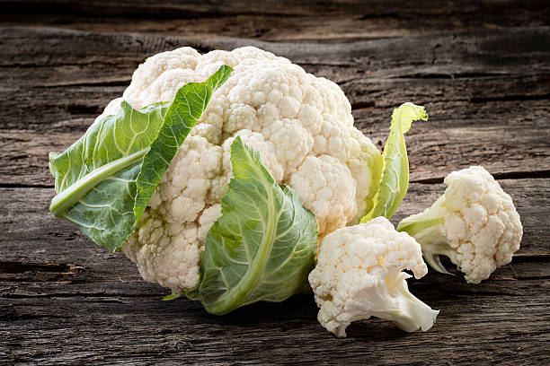
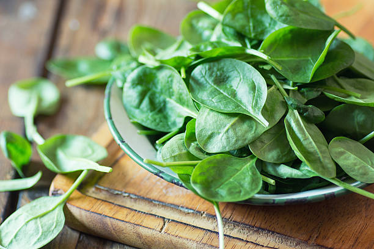
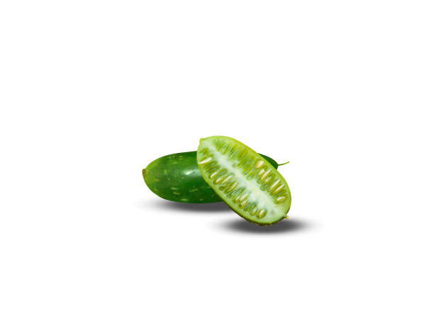

Peas are commonly grown as spring crops. They prefer cooler weather and can tolerate light frosts.Start planting peas as soon as the soil can be worked in early spring, usually when soil temperatures reach about 45°F to 60°F (7°C to 15°C).
Peas are widely cultivated and have a significant market presence across various states in India. like Uttarpradesh, MadhyaPradesh, Maharashtra, Uttarakhand, Punjab, Haryana.
pH Level should be Slightly acidic to neutral (pH 6.0 to 7.5).Peas take approximately 55 to 70 days from planting to reach maturity and harvest. This timeframe can vary based on the pea variety and growing conditions.
peas contain vitamins like A, C, K.
బఠానీలను సాధారణంగా వసంత పంటలుగా పండిస్తారు. అవి చల్లటి వాతావరణాన్ని ఇష్టపడతాయి మరియు తేలికపాటి మంచును తట్టుకోగలవు. వసంత ఋతువు ప్రారంభంలో నేల పని చేయగలిగిన వెంటనే బఠానీలను నాటడం ప్రారంభించండి, సాధారణంగా నేల ఉష్ణోగ్రతలు 45°F నుండి 60°F (7°C నుండి 15°C)కి చేరుకున్నప్పుడు.
బఠానీలు విస్తృతంగా సాగు చేయబడుతున్నాయి మరియు భారతదేశంలోని వివిధ రాష్ట్రాల్లో గణనీయమైన మార్కెట్ ఉనికిని కలిగి ఉన్నాయి. ఉత్తరప్రదేశ్, మధ్యప్రదేశ్, మహారాష్ట్ర, ఉత్తరాఖండ్, పంజాబ్, హర్యానా వంటివి.
pH స్థాయి కొద్దిగా ఆమ్లం నుండి తటస్థంగా ఉండాలి (pH 6.0 నుండి 7.5). బఠానీలు నాటడం నుండి పరిపక్వత మరియు కోతకు దాదాపు 55 నుండి 70 రోజులు పడుతుంది. బఠానీ రకం మరియు పెరుగుతున్న పరిస్థితుల ఆధారంగా ఈ కాలపరిమితి మారవచ్చు.
బఠానీలలో A, C, K వంటి విటమిన్లు ఉంటాయి.
6. RADISH / 6.ముల్లంగి

Radishes are often planted as one of the first crops in early spring, usually as soon as the soil can be worked and is frost-free.Ideal soil temperatures for radish germination range from 45°F to 75°F (7°C to 24°C).
Well-drained, fertile soil with good organic matter content is ideal for radish cultivation.Radishes are widely cultivated and have a significant market presence across various states in India. like Uttarpradesh, Punjab, Haryana, Rajasthan, Uttarakhand.
Radishes thrive in well-drained, loose soil that allows for easy root penetration and water drainage.The optimal soil pH for radishes is slightly acidic to neutral, ranging from 5.8 to 7.2.
Approximately it takes 20 to 70 days from planting to maturity, depending on variety.It contains Vitamins like A, B, C, E, K.
ముల్లంగిని తరచుగా వసంత ఋతువులో మొదటి పంటలలో ఒకటిగా పండిస్తారు, సాధారణంగా నేల పని చేయగలిగిన వెంటనే మరియు మంచు రహితంగా ఉంటుంది. ముల్లంగి అంకురోత్పత్తికి అనువైన నేల ఉష్ణోగ్రతలు 45°F నుండి 75°F (7°C నుండి 24) వరకు ఉంటాయి. °C).
మంచి ఎండిపోయిన, మంచి సేంద్రీయ పదార్థంతో కూడిన సారవంతమైన నేల ముల్లంగి సాగుకు అనువైనది. ముల్లంగిని విస్తృతంగా సాగు చేస్తారు మరియు భారతదేశంలోని వివిధ రాష్ట్రాలలో గణనీయమైన మార్కెట్ ఉనికిని కలిగి ఉన్నారు. ఉత్తరప్రదేశ్, పంజాబ్, హర్యానా, రాజస్థాన్, ఉత్తరాఖండ్ వంటివి.
ముల్లంగి బాగా ఎండిపోయిన, వదులుగా ఉండే నేలలో వృద్ధి చెందుతుంది, ఇది సులభంగా రూట్ వ్యాప్తి మరియు నీటి పారుదలని అనుమతిస్తుంది. ముల్లంగికి సరైన నేల pH 5.8 నుండి 7.2 వరకు కొద్దిగా ఆమ్లం నుండి తటస్థంగా ఉంటుంది.
నాటడం నుండి పరిపక్వతకు దాదాపు 20 నుండి 70 రోజులు పడుతుంది, ఇది రకాన్ని బట్టి ఉంటుంది. ఇందులో A, B, C, E, K వంటి విటమిన్లు ఉంటాయి.
7. BEANS / 7.బీన్స్
In regions with mild winters and early springs, beans can be planted as soon as the soil temperature reaches around 60°F to 65°F (15°C to 18°C).Spring-planted beans benefit from warm soil and moderate temperatures for germination and early growth.
Beans, being a staple in many cuisines worldwide, have a significant market share and are cultivated extensively in various states across India. like Maharashtra, Karnataka, Andhrapradesh, Telangana, Tamilnadu, Uttarpradesh, Punjab, Haryana.
Beans prefer loamy soil that is well-drained and has a balanced texture of sand, silt, and clay. Loamy soil provides good aeration and moisture retention, allowing bean roots to develop well.
The optimal soil pH for beans is slightly acidic to neutral, ideally ranging from 6.0 to 7.0. This pH range supports nutrient availability and uptake by bean plants.
Approximately 8 to 12 weeks from planting to harvest, depending on variety and growing conditions.It contains vitamins like C, A, K.
తేలికపాటి శీతాకాలాలు మరియు వసంత ఋతువుల ప్రారంభంలో, నేల ఉష్ణోగ్రత సుమారు 60°F నుండి 65°F (15°C నుండి 18°C)కి చేరుకున్న వెంటనే బీన్స్ను నాటవచ్చు. వసంతకాలంలో నాటిన బీన్స్ వెచ్చని నేల మరియు మితమైన ఉష్ణోగ్రతల నుండి ప్రయోజనం పొందుతాయి. అంకురోత్పత్తి మరియు ప్రారంభ పెరుగుదల.
బీన్స్, ప్రపంచవ్యాప్తంగా అనేక వంటకాల్లో ప్రధానమైనది, ఇది గణనీయమైన మార్కెట్ వాటాను కలిగి ఉంది మరియు భారతదేశంలోని వివిధ రాష్ట్రాల్లో విస్తృతంగా సాగు చేయబడుతోంది. మహారాష్ట్ర, కర్నాటక, ఆంధ్ర ప్రదేశ్, తెలంగాణ, తమిళనాడు, ఉత్తరప్రదేశ్, పంజాబ్, హర్యానా వంటివి.
బీన్స్ బాగా ఎండిపోయిన మరియు ఇసుక, సిల్ట్ మరియు బంకమట్టి యొక్క సమతుల్య ఆకృతిని కలిగి ఉండే లోమీ నేలను ఇష్టపడతాయి. లోమీ నేల మంచి గాలిని మరియు తేమ నిలుపుదలని అందిస్తుంది, బీన్ వేర్లు బాగా అభివృద్ధి చెందడానికి వీలు కల్పిస్తుంది.
బీన్స్ కోసం సరైన నేల pH కొద్దిగా ఆమ్లం నుండి తటస్థంగా ఉంటుంది, ఆదర్శంగా 6.0 నుండి 7.0 వరకు ఉంటుంది. ఈ pH పరిధి బీన్ మొక్కల ద్వారా పోషకాల లభ్యత మరియు శోషణకు మద్దతు ఇస్తుంది.
నాటడం నుండి పంట వరకు సుమారు 8 నుండి 12 వారాల వరకు, వివిధ మరియు పెరుగుతున్న పరిస్థితులపై ఆధారపడి ఉంటుంది. ఇందులో C, A, K వంటి విటమిన్లు ఉంటాయి.
8. SWEET POTATO / 8.చిలగడ దుంప

Sweet potatoes are warm-season crops planted in late spring, summer, or early fall, depending on local climate and frost-free periods.they thrive in temperatures between 70°F to 85°F (21°C to 29°C).
Sweet potatoes are widely cultivated and sold in states like Uttar Pradesh, West Bengal, Odisha, Tamil Nadu, Karnataka, Maharashtra, Andhra Pradesh, and Telangana.
Sweet potatoes prefer sandy loam soil that is loose, well-drained, and friable. Sandy loam allows for easy root penetration and tuber development.The optimal soil pH for sweet potatoes is slightly acidic to neutral, ideally ranging from 5.8 to 6.5. This pH range supports nutrient availability and tuber formation.
3 to 4 months from planting to harvest, with ongoing maintenance throughout the growing season.It contains vitamins like A, C, K.
చిలగడదుంపలు వసంత ఋతువు చివరిలో, వేసవికాలం లేదా ప్రారంభ పతనంలో నాటబడతాయి, స్థానిక వాతావరణం మరియు మంచు-రహిత కాలాల మీద ఆధారపడి ఉంటాయి. ఇవి 70°F నుండి 85°F (21°C నుండి 29°C) మధ్య ఉష్ణోగ్రతలలో వృద్ధి చెందుతాయి.
ఉత్తరప్రదేశ్, పశ్చిమ బెంగాల్, ఒడిశా, తమిళనాడు, కర్ణాటక, మహారాష్ట్ర, ఆంధ్రప్రదేశ్ మరియు తెలంగాణ వంటి రాష్ట్రాలలో చిలగడదుంపలు విస్తృతంగా పండిస్తారు మరియు విక్రయిస్తున్నారు.
తీపి బంగాళాదుంపలు వదులుగా, బాగా ఎండిపోయిన మరియు ఫ్రైబుల్ అయిన ఇసుక లోమ్ మట్టిని ఇష్టపడతాయి. ఇసుక లోవామ్ సులభంగా రూట్ వ్యాప్తి మరియు గడ్డ దినుసు అభివృద్ధికి అనుమతిస్తుంది. చిలగడదుంపల కోసం సరైన నేల pH కొద్దిగా ఆమ్లం నుండి తటస్థంగా ఉంటుంది, ఆదర్శంగా 5.8 నుండి 6.5 వరకు ఉంటుంది. ఈ pH పరిధి పోషకాల లభ్యత మరియు గడ్డ దినుసుల నిర్మాణానికి మద్దతు ఇస్తుంది.
నాటడం నుండి పంట వరకు 3 నుండి 4 నెలల వరకు, పెరుగుతున్న సీజన్ అంతటా నిర్వహణ కొనసాగుతుంది. ఇందులో A, C, K వంటి విటమిన్లు ఉంటాయి.
9. DRUMSTICK / 9.మునగకాయ
Drumstick trees are typically grown during the summer season in warm and tropical climates.The ideal temperature range for growing drumstick trees is approximately 25°C to 35°C (77°F to 95°F).
In India, drumsticks are extensively cultivated and consumed, particularly in states like Tamil Nadu, Andhra Pradesh, Telangana, and Karnataka. These states have favorable climates for drumstick cultivation and also a significant market demand due to the popularity of drumsticks in regional cuisines.
Drumstick trees thrive in a variety of soil types, but they generally prefer well-drained soils with a pH range of 6.3 to 7.0. They can grow in sandy, loamy, or clayey soils as long as the soil is well-drained. However, they do not tolerate waterlogged conditions.
Drumstick trees typically start bearing fruit within 8-12 months after planting. Harvesting can be done periodically as the pods mature. Resources required for harvesting include labor and tools for harvesting and processing the pods.
It contains vitamins like C, A, E.
మునగ చెట్లను సాధారణంగా వేసవి కాలంలో వెచ్చని మరియు ఉష్ణమండల వాతావరణంలో పెంచుతారు. మునగ చెట్లను పెంచడానికి అనువైన ఉష్ణోగ్రత పరిధి సుమారుగా 25°C నుండి 35°C (77°F నుండి 95°F).
భారతదేశంలో, ముఖ్యంగా తమిళనాడు, ఆంధ్రప్రదేశ్, తెలంగాణ మరియు కర్నాటక వంటి రాష్ట్రాల్లో మునగకాయలను విస్తారంగా సాగు చేస్తారు మరియు వినియోగిస్తారు. ఈ రాష్ట్రాలు మునగ సాగుకు అనుకూలమైన వాతావరణాన్ని కలిగి ఉన్నాయి మరియు ప్రాంతీయ వంటకాల్లో మునగకు ఉన్న ప్రజాదరణ కారణంగా మార్కెట్లో గణనీయమైన డిమాండ్ ఉంది.
మునగ చెట్లు వివిధ రకాల నేలల్లో వృద్ధి చెందుతాయి, అయితే అవి సాధారణంగా 6.3 నుండి 7.0 pH పరిధితో బాగా ఎండిపోయిన నేలలను ఇష్టపడతాయి. నేల బాగా ఎండిపోయినంత వరకు అవి ఇసుక, లోమీ లేదా బంకమట్టి నేలల్లో పెరుగుతాయి. అయినప్పటికీ, నీటి ఎద్దడిని వారు సహించరు.
మునగ చెట్లు సాధారణంగా నాటిన 8-12 నెలల్లో ఫలాలను ఇవ్వడం ప్రారంభిస్తాయి. కాయలు పరిపక్వం చెందడంతో క్రమానుగతంగా కోత చేయవచ్చు. కోతకు అవసరమైన వనరులలో కూలీలు మరియు కాయలను కోయడానికి మరియు ప్రాసెస్ చేయడానికి సాధనాలు ఉన్నాయి.
ఇందులో సి, ఎ, ఇ వంటి విటమిన్లు ఉంటాయి.
10. BITTERGOURD / 10.కాకరకాయ

Bitter gourd, also known as bitter melon or Momordica charantia, is typically grown during the warm season in tropical and subtropical regions.
The optimal soil temperature for planting bitter gourd seeds is typically around 70 to 95°F (21 to 35°C).Bitter gourd, also known as bitter melon or karela, is cultivated and consumed in various regions around the world, particularly in tropical and subtropical climates.like Maharashtra, Andhra Pradesh, Tamil Nadu, Karnataka, West Bengal, Odisha, Uttar Pradesh, Gujarat, Bihar.
Bitter gourd thrives in well-drained, fertile soil with a pH range between 6.0 and 7.0. The ideal soil type for growing bitter gourd is sandy loam or loamy soil, which provides good drainage while retaining moisture and nutrients.
Bitter gourd fruits are typically ready for harvest 2 to 3 months after planting.It contains vitamins like C, A, E.
చేదు పొట్లకాయ, చేదు పుచ్చకాయ లేదా మోమోర్డికా చరాంటియా అని కూడా పిలుస్తారు, సాధారణంగా ఉష్ణమండల మరియు ఉపఉష్ణమండల ప్రాంతాలలో వెచ్చని సీజన్లో పండిస్తారు.
చేదు పొట్లకాయ విత్తనాలను నాటడానికి సరైన నేల ఉష్ణోగ్రత సాధారణంగా 70 నుండి 95 ° F (21 నుండి 35 ° C) వరకు ఉంటుంది. చేదు పుచ్చకాయ లేదా కరేలా అని కూడా పిలువబడే బిట్టర్ పొట్లకాయను ప్రపంచంలోని వివిధ ప్రాంతాలలో, ముఖ్యంగా ఉష్ణమండలంలో పండిస్తారు మరియు వినియోగిస్తారు. మరియు ఉపఉష్ణమండల వాతావరణం. మహారాష్ట్ర, ఆంధ్రప్రదేశ్, తమిళనాడు, కర్నాటక, పశ్చిమ బెంగాల్, ఒడిశా, ఉత్తర ప్రదేశ్, గుజరాత్, బీహార్ వంటివి.
చేదు పొట్లకాయ 6.0 మరియు 7.0 మధ్య pH పరిధితో బాగా ఎండిపోయిన, సారవంతమైన నేలలో వృద్ధి చెందుతుంది. చేదు పొట్లకాయను పెంచడానికి అనువైన నేల రకం ఇసుక లోమీ లేదా లోమీ నేల, ఇది తేమ మరియు పోషకాలను నిలుపుకుంటూ మంచి పారుదలని అందిస్తుంది.
చేదు పొట్లకాయ సాధారణంగా నాటిన 2 నుండి 3 నెలల తర్వాత కోతకు సిద్ధంగా ఉంటుంది. ఇందులో సి, ఎ, ఇ వంటి విటమిన్లు ఉంటాయి.
11. CAPSICUM / 11.క్యాప్సికమ్
Capsicum, commonly known as bell peppers or sweet peppers, is typically grown during the warm season in temperate climates and throughout the year in tropical and subtropical regions.
The optimal soil temperature for planting capsicum (bell peppers) seeds is typically between 70°F to 85°F (21°C to 29°C). Capsicum seeds germinate best in warm soil conditions.
in India, capsicum is cultivated in various states, including Maharashtra, Andhra Pradesh, Karnataka, Tamil Nadu, Gujarat, and Telangana. These states have favorable climates and soil conditions for capsicum cultivation, and they contribute significantly to the production and market share of capsicum in the country.
Capsicum plants prefer slightly acidic to neutral soil with a pH range of 6.0 to 7.0. Soil pH outside of this range can affect nutrient availability and plant growth.Capsicum plants are heavy feeders and require fertile soil with adequate nutrients for healthy growth and fruit production. Adding organic matter such as compost or well-rotted manure to the soil before planting can help improve soil fertility.
Capsicum fruits are typically ready for harvest 60 to 90 days after transplanting seedlings or 75 to 100 days after sowing seeds.It contains vitamins like C, A, E.
క్యాప్సికమ్, సాధారణంగా బెల్ పెప్పర్స్ లేదా స్వీట్ పెప్పర్స్ అని పిలుస్తారు, సాధారణంగా వెచ్చని సీజన్లో సమశీతోష్ణ వాతావరణంలో మరియు ఏడాది పొడవునా ఉష్ణమండల మరియు ఉపఉష్ణమండల ప్రాంతాలలో పండిస్తారు.
క్యాప్సికమ్ (బెల్ పెప్పర్స్) విత్తనాలను నాటడానికి సరైన నేల ఉష్ణోగ్రత సాధారణంగా 70°F నుండి 85°F (21°C నుండి 29°C) మధ్య ఉంటుంది. క్యాప్సికమ్ విత్తనాలు వెచ్చని నేల పరిస్థితులలో ఉత్తమంగా మొలకెత్తుతాయి.
భారతదేశంలో, మహారాష్ట్ర, ఆంధ్రప్రదేశ్, కర్నాటక, తమిళనాడు, గుజరాత్ మరియు తెలంగాణతో సహా వివిధ రాష్ట్రాల్లో క్యాప్సికమ్ సాగు చేయబడుతుంది. ఈ రాష్ట్రాలు క్యాప్సికమ్ సాగుకు అనుకూలమైన వాతావరణాలు మరియు నేల పరిస్థితులను కలిగి ఉన్నాయి మరియు దేశంలో క్యాప్సికం ఉత్పత్తి మరియు మార్కెట్ వాటాకు ఇవి గణనీయంగా దోహదం చేస్తాయి.
క్యాప్సికమ్ మొక్కలు 6.0 నుండి 7.0 pH పరిధితో తటస్థ మట్టికి కొద్దిగా ఆమ్లతను ఇష్టపడతాయి. ఈ శ్రేణి వెలుపల నేల pH పోషక లభ్యత మరియు మొక్కల పెరుగుదలను ప్రభావితం చేస్తుంది. క్యాప్సికమ్ మొక్కలు భారీ ఫీడర్లు మరియు ఆరోగ్యకరమైన పెరుగుదల మరియు పండ్ల ఉత్పత్తికి తగిన పోషకాలతో కూడిన సారవంతమైన నేల అవసరం. నాటడానికి ముందు మట్టికి కంపోస్ట్ లేదా బాగా కుళ్ళిన ఎరువు వంటి సేంద్రియ పదార్ధాలను జోడించడం వల్ల నేల సంతానోత్పత్తి మెరుగుపడుతుంది.
క్యాప్సికమ్ పండ్లు సాధారణంగా మొలకలను నాటిన 60 నుండి 90 రోజుల తర్వాత లేదా విత్తనాలు విత్తిన 75 నుండి 100 రోజుల తర్వాత కోతకు సిద్ధంగా ఉంటాయి. ఇందులో సి, ఎ, ఇ వంటి విటమిన్లు ఉంటాయి.
12. REDCHILLI / 12.ఎర్ర మిరపకాయ


Red chili peppers are typically grown during the warm season in tropical and subtropical regions. The specific growing season for red chili peppers can vary depending on factors such as climate, temperature, and local agricultural practices.
The optimal soil temperature for planting red chili peppers typically ranges from 70°F to 95°F (21°C to 35°C).
In India, which is one of the largest producers and consumers of red chili peppers, the state of Andhra Pradesh is renowned for its significant cultivation and trade of red chili peppers. Andhra Pradesh accounts for a substantial portion of India's total red chili pepper production and is often referred to as the "chili bowl of India."
Apart from Andhra Pradesh, other states in India known for red chili pepper cultivation include Telangana, Karnataka, Maharashtra, Tamil Nadu, and Rajasthan. These states have suitable agro-climatic conditions for red chili pepper cultivation and contribute significantly to India's overall production and market share of red chili peppers.
Red chili peppers prefer slightly acidic to neutral soil with a pH range of 6.0 to 7.0. Soil pH outside of this range can affect nutrient availability and plant growth.
Red chili pepper fruits are typically ready for harvest 60 to 90 days after transplanting seedlings or 75 to 100 days after sowing seeds.It contains vitamins like C, A, E.
ఎరుపు మిరపకాయలు సాధారణంగా ఉష్ణమండల మరియు ఉపఉష్ణమండల ప్రాంతాలలో వెచ్చని సీజన్లో పెరుగుతాయి. ఎరుపు మిరపకాయల కోసం నిర్దిష్ట పెరుగుతున్న కాలం వాతావరణం, ఉష్ణోగ్రత మరియు స్థానిక వ్యవసాయ పద్ధతులు వంటి అంశాలపై ఆధారపడి ఉంటుంది.
ఎర్ర మిరపకాయలను నాటడానికి సరైన నేల ఉష్ణోగ్రత సాధారణంగా 70°F నుండి 95°F (21°C నుండి 35°C) వరకు ఉంటుంది.
ఎర్ర మిరపకాయల అతిపెద్ద ఉత్పత్తిదారులు మరియు వినియోగదారులలో ఒకటిగా ఉన్న భారతదేశంలో, ఆంధ్రప్రదేశ్ రాష్ట్రం ఎర్ర మిరపకాయల గణనీయమైన సాగు మరియు వ్యాపారానికి ప్రసిద్ధి చెందింది. భారతదేశం యొక్క మొత్తం ఎర్ర మిరపకాయ ఉత్పత్తిలో ఆంధ్రప్రదేశ్ గణనీయమైన భాగాన్ని కలిగి ఉంది మరియు దీనిని తరచుగా "భారతదేశం యొక్క మిరప గిన్నె"గా సూచిస్తారు.
ఆంధ్రప్రదేశ్తో పాటు, భారతదేశంలోని తెలంగాణ, కర్ణాటక, మహారాష్ట్ర, తమిళనాడు మరియు రాజస్థాన్లలో ఎర్ర మిరప సాగుకు ప్రసిద్ధి చెందిన ఇతర రాష్ట్రాలు ఉన్నాయి. ఈ రాష్ట్రాలు ఎర్ర మిరప సాగుకు అనువైన వ్యవసాయ-వాతావరణ పరిస్థితులను కలిగి ఉన్నాయి మరియు భారతదేశం యొక్క మొత్తం ఉత్పత్తి మరియు ఎర్ర మిరపకాయల మార్కెట్ వాటాకు గణనీయంగా దోహదం చేస్తాయి.
ఎర్ర మిరపకాయలు pH పరిధి 6.0 నుండి 7.0 వరకు ఉన్న తటస్థ మట్టికి కొద్దిగా ఆమ్లాన్ని ఇష్టపడతాయి. ఈ పరిధి వెలుపల ఉన్న నేల pH పోషక లభ్యత మరియు మొక్కల పెరుగుదలను ప్రభావితం చేస్తుంది.
ఎర్ర మిరపకాయ పండ్లు సాధారణంగా మొలకలను నాటిన 60 నుండి 90 రోజుల తర్వాత లేదా విత్తనాలు విత్తిన 75 నుండి 100 రోజుల తర్వాత కోతకు సిద్ధంగా ఉంటాయి. ఇందులో సి, ఎ, ఇ వంటి విటమిన్లు ఉంటాయి.
13. GREENCHILLI / 13.పచ్చి మిర్చి


Green chili peppers, like their red counterparts, are typically grown during the warm season in tropical and subtropical regions. The specific growing season for green chili peppers can vary depending on factors such as climate, temperature, and local agricultural practices.
The optimal soil temperature for planting green chili peppers typically ranges from 70°F to 95°F (21°C to 35°C).
Andhra Pradesh is one of the leading states in India for both the cultivation and consumption of green chili peppers. The Guntur district in Andhra Pradesh is particularly renowned for its chili pepper cultivation, including green chili peppers. Guntur chilies are known for their pungency and are widely used in Indian cuisine, contributing to the state's significant market share in green chili peppers.
Other states in India known for green chili pepper cultivation include Telangana, Karnataka, Maharashtra, Tamil Nadu, Gujarat, and Rajasthan. These states have suitable agro-climatic conditions for green chili pepper cultivation and contribute substantially to India's overall production and market share of green chili peppers.
Green chili peppers prefer slightly acidic to neutral soil with a pH range of 6.0 to 7.0. Soil pH outside of this range can affect nutrient availability and plant growth.
Green chili pepper fruits are typically ready for harvest 60 to 90 days after transplanting seedlings or 75 to 100 days after sowing seeds, It contains vitamins like C, A.
ఆకుపచ్చ మిరపకాయలు, వాటి ఎరుపు ప్రతిరూపాల వలె, సాధారణంగా ఉష్ణమండల మరియు ఉపఉష్ణమండల ప్రాంతాలలో వెచ్చని సీజన్లో పెరుగుతాయి. పచ్చి మిరపకాయల నిర్దిష్ట పెరుగుతున్న కాలం వాతావరణం, ఉష్ణోగ్రత మరియు స్థానిక వ్యవసాయ పద్ధతులు వంటి అంశాలపై ఆధారపడి ఉంటుంది.
పచ్చి మిరపకాయలను నాటడానికి సరైన నేల ఉష్ణోగ్రత సాధారణంగా 70°F నుండి 95°F (21°C నుండి 35°C) వరకు ఉంటుంది.
పచ్చి మిరపకాయల సాగు మరియు వినియోగం రెండింటిలోనూ భారతదేశంలోని అగ్రగామి రాష్ట్రాలలో ఆంధ్రప్రదేశ్ ఒకటి. ఆంధ్రప్రదేశ్లోని గుంటూరు జిల్లా పచ్చి మిరపకాయలతో సహా మిరప సాగుకు ప్రత్యేకించి ప్రసిద్ధి చెందింది. గుంటూరు మిరపకాయలు వాటి ఘాటుకు ప్రసిద్ధి చెందాయి మరియు భారతీయ వంటకాల్లో విస్తృతంగా ఉపయోగించబడుతున్నాయి, ఇది పచ్చి మిరపకాయలలో రాష్ట్ర మార్కెట్ వాటాను గణనీయంగా పెంచడానికి దోహదం చేస్తుంది.
భారతదేశంలోని తెలంగాణ, కర్ణాటక, మహారాష్ట్ర, తమిళనాడు, గుజరాత్ మరియు రాజస్థాన్ వంటి ఇతర రాష్ట్రాలు పచ్చి మిరప సాగుకు ప్రసిద్ధి చెందాయి. ఈ రాష్ట్రాలు పచ్చి మిరప సాగుకు అనువైన వ్యవసాయ-వాతావరణ పరిస్థితులను కలిగి ఉన్నాయి మరియు పచ్చి మిరపకాయల భారతదేశం యొక్క మొత్తం ఉత్పత్తి మరియు మార్కెట్ వాటాకు గణనీయంగా దోహదం చేస్తాయి.
పచ్చి మిరపకాయలు pH పరిధి 6.0 నుండి 7.0 వరకు ఉండే తటస్థ మట్టికి కొద్దిగా ఆమ్లాన్ని ఇష్టపడతాయి. ఈ పరిధి వెలుపల ఉన్న నేల pH పోషక లభ్యత మరియు మొక్కల పెరుగుదలను ప్రభావితం చేస్తుంది.
పచ్చి మిరపకాయ పండ్లు సాధారణంగా మొలకలను నాటిన 60 నుండి 90 రోజుల తర్వాత లేదా విత్తనాలు విత్తిన 75 నుండి 100 రోజుల తర్వాత కోతకు సిద్ధంగా ఉంటాయి, ఇందులో C, A వంటి విటమిన్లు ఉంటాయి.
14. GINGER / 14.అల్లం

Ginger is typically grown in tropical or subtropical regions where the climate is warm and humid. The ideal conditions for ginger cultivation include temperatures between 20°C to 30°C (68°F to 86°F), plenty of rainfall, and well-draining soil.
In terms of market share, ginger produced in Kerala is widely distributed and consumed both domestically within India and exported to other countries. Kerala's ginger is known for its quality and is in demand in both national and international markets. Other Indian states like Karnataka, Assam, Meghalaya, and Himachal Pradesh also contribute to ginger cultivation, but Kerala holds a prominent position in both cultivation and market share.
The ideal soil pH for ginger cultivation ranges from 5.5 to 6.5. Soil pH outside of this range can affect nutrient availability and overall plant health.
Ginger takes about 8 to 10 months to reach maturity and be ready for harvest. During this time, regular maintenance tasks such as watering, weeding, and pest control may be required.
It cointains only vitamin C.
అల్లం సాధారణంగా ఉష్ణమండల లేదా ఉపఉష్ణమండల ప్రాంతాలలో పెరుగుతుంది, ఇక్కడ వాతావరణం వెచ్చగా మరియు తేమగా ఉంటుంది. అల్లం సాగుకు అనువైన పరిస్థితులు 20°C నుండి 30°C (68°F నుండి 86°F వరకు), పుష్కలంగా వర్షపాతం మరియు బాగా ఎండిపోయే నేల.
మార్కెట్ వాటా పరంగా, కేరళలో ఉత్పత్తి చేయబడిన అల్లం విస్తృతంగా పంపిణీ చేయబడుతుంది మరియు భారతదేశంలో దేశీయంగా వినియోగించబడుతుంది మరియు ఇతర దేశాలకు ఎగుమతి చేయబడుతుంది. కేరళ అల్లం దాని నాణ్యతకు ప్రసిద్ధి చెందింది మరియు జాతీయ మరియు అంతర్జాతీయ మార్కెట్లలో డిమాండ్ ఉంది. కర్ణాటక, అస్సాం, మేఘాలయ మరియు హిమాచల్ ప్రదేశ్ వంటి ఇతర భారతీయ రాష్ట్రాలు కూడా అల్లం సాగుకు దోహదం చేస్తాయి, అయితే కేరళ సాగు మరియు మార్కెట్ వాటా రెండింటిలోనూ ప్రముఖ స్థానాన్ని కలిగి ఉంది.
అల్లం సాగుకు సరైన నేల pH 5.5 నుండి 6.5 వరకు ఉంటుంది. ఈ పరిధికి వెలుపల ఉన్న నేల pH పోషక లభ్యత మరియు మొత్తం మొక్కల ఆరోగ్యాన్ని ప్రభావితం చేస్తుంది.
అల్లం పక్వానికి చేరుకోవడానికి మరియు కోతకు సిద్ధంగా ఉండటానికి 8 నుండి 10 నెలల సమయం పడుతుంది. ఈ సమయంలో, నీరు త్రాగుట, కలుపు తీయుట మరియు తెగులు నియంత్రణ వంటి సాధారణ నిర్వహణ పనులు అవసరం కావచ్చు.
ఇందులో విటమిన్ సి మాత్రమే ఉంటుంది.
15. GARLIC / 15.వెల్లుల్లి

Garlic is typically planted in the fall season, around late September to November, depending on the specific climate and region.The ideal soil temperature for planting garlic is typically between 50°F to 60°F (10°C to 15.5°C).
In India, the state of Madhya Pradesh is one of the leading producers of garlic. Other significant garlic-producing states include Gujarat, Rajasthan, Uttar Pradesh, Maharashtra, and Karnataka. Among these, Madhya Pradesh and Gujarat are particularly notable for their garlic cultivation.
Loamy soil, which is a balanced mixture of sand, silt, and clay, is ideal for garlic cultivation. This type of soil provides good drainage while also retaining moisture and nutrients.
The ideal soil pH for garlic cultivation ranges from 6.0 to 7.0. Garlic can tolerate slightly acidic to neutral soil conditions. Soil pH outside of this range can affect nutrient availability and overall plant health.
Garlic requires several months to grow and mature. During this time, regular maintenance tasks such as watering, weeding, and fertilizing may be necessary to ensure healthy growth.
It contains vitamins like C, B6, B1.
నిర్దిష్ట వాతావరణం మరియు ప్రాంతాన్ని బట్టి వెల్లుల్లిని సాధారణంగా శరదృతువులో సెప్టెంబరు చివరి నుండి నవంబర్ వరకు పండిస్తారు. వెల్లుల్లిని నాటడానికి అనువైన నేల ఉష్ణోగ్రత సాధారణంగా 50°F నుండి 60°F (10°C నుండి 15.5°C) మధ్య ఉంటుంది.
భారతదేశంలో, మధ్యప్రదేశ్ రాష్ట్రం వెల్లుల్లి ఉత్పత్తిలో అగ్రగామిగా ఉంది. ఇతర ముఖ్యమైన వెల్లుల్లిని ఉత్పత్తి చేసే రాష్ట్రాలు గుజరాత్, రాజస్థాన్, ఉత్తర ప్రదేశ్, మహారాష్ట్ర మరియు కర్ణాటక. వీటిలో ముఖ్యంగా మధ్యప్రదేశ్ మరియు గుజరాత్లు వెల్లుల్లి సాగులో గుర్తించదగినవి.
ఇసుక, సిల్ట్ మరియు బంకమట్టి యొక్క సమతుల్య మిశ్రమం అయిన లోమీ నేల వెల్లుల్లి సాగుకు అనువైనది. ఈ రకమైన నేల తేమ మరియు పోషకాలను నిలుపుకుంటూ మంచి పారుదలని అందిస్తుంది.
వెల్లుల్లి సాగుకు సరైన నేల pH 6.0 నుండి 7.0 వరకు ఉంటుంది. వెల్లుల్లి తటస్థ నేల పరిస్థితులకు కొద్దిగా ఆమ్లతను తట్టుకోగలదు. ఈ పరిధికి వెలుపల ఉన్న నేల pH పోషక లభ్యత మరియు మొత్తం మొక్కల ఆరోగ్యాన్ని ప్రభావితం చేస్తుంది.
వెల్లుల్లి పెరగడానికి మరియు పరిపక్వం చెందడానికి చాలా నెలలు అవసరం. ఈ సమయంలో, ఆరోగ్యకరమైన పెరుగుదలను నిర్ధారించడానికి నీరు త్రాగుట, కలుపు తీయుట మరియు ఎరువులు వేయడం వంటి సాధారణ నిర్వహణ పనులు అవసరం కావచ్చు.
ఇందులో సి, బి6, బి1 వంటి విటమిన్లు ఉంటాయి.
16. ONION / 16.ఉల్లిపాయ
Onions are typically grown during the cool season.In regions with a temperate climate, onions are often planted in the late winter or early spring, around February to April.
The ideal soil temperature for planting onions is generally between 50°F to 75°F (10°C to 24°C).
In India, onions are grown and consumed extensively across various states. However, the state of Maharashtra is one of the largest producers of onions in the country and often dominates both cultivation and market share. Other significant onion-producing states in India include Karnataka, Gujarat, Madhya Pradesh, Andhra Pradesh, and Uttar Pradesh.
The ideal soil pH for onion cultivation ranges from 5.8 to 6.8. Soil pH outside of this range can affect nutrient availability and overall plant health.
It contains vitamins like B6 and C.
ఉల్లిపాయలు సాధారణంగా చల్లని కాలంలో పండిస్తారు. సమశీతోష్ణ వాతావరణం ఉన్న ప్రాంతాల్లో, ఉల్లిపాయలు తరచుగా శీతాకాలం చివరిలో లేదా వసంత ఋతువు ప్రారంభంలో, ఫిబ్రవరి నుండి ఏప్రిల్ వరకు పండిస్తారు.
ఉల్లిపాయలు నాటడానికి అనువైన నేల ఉష్ణోగ్రత సాధారణంగా 50°F నుండి 75°F (10°C నుండి 24°C) మధ్య ఉంటుంది.
భారతదేశంలో, ఉల్లిపాయలు వివిధ రాష్ట్రాలలో విస్తృతంగా పండిస్తారు మరియు వినియోగిస్తారు. ఏది ఏమైనప్పటికీ, దేశంలో ఉల్లిని అత్యధికంగా ఉత్పత్తి చేసే రాష్ట్రాల్లో మహారాష్ట్ర రాష్ట్రం ఒకటి మరియు తరచుగా సాగు మరియు మార్కెట్ వాటా రెండింటిలోనూ ఆధిపత్యం చెలాయిస్తుంది. భారతదేశంలోని ఇతర ముఖ్యమైన ఉల్లిని ఉత్పత్తి చేసే రాష్ట్రాలు కర్ణాటక, గుజరాత్, మధ్యప్రదేశ్, ఆంధ్రప్రదేశ్ మరియు ఉత్తరప్రదేశ్.
ఉల్లి సాగుకు సరైన నేల pH 5.8 నుండి 6.8 వరకు ఉంటుంది. ఈ పరిధికి వెలుపల ఉన్న నేల pH పోషక లభ్యత మరియు మొత్తం మొక్కల ఆరోగ్యాన్ని ప్రభావితం చేస్తుంది.
ఇందులో బి6, సి వంటి విటమిన్లు ఉంటాయి.
17. POTATO / 17.ఉర్లగడ్డ/ బంగాలాదుంప

Potatoes are typically grown during the cool season.In regions with temperate climates, potatoes are often planted in the spring, usually between March and May, depending on local conditions. The soil temperature should be above freezing and around 45°F to 50°F (7°C to 10°C) for proper seed germination and early growth.
In India, the state of Uttar Pradesh (UP) is one of the largest producers of potatoes and often dominates both cultivation and market share. Other significant potato-producing states include West Bengal, Punjab, Bihar, Gujarat, and Madhya Pradesh.
Uttar Pradesh, particularly regions like Agra, Kanpur, and Meerut, accounts for a substantial portion of India's potato production. The favorable climate and soil conditions in these regions, coupled with advanced agricultural practices, contribute to Uttar Pradesh's prominence in potato cultivation.
In terms of market share, potatoes produced in Uttar Pradesh are widely distributed and sold both domestically within India and exported to other countries. The state's potatoes are known for their quality and are in demand in various markets across the country.
Potatoes grow best in loamy soil, which is a balanced mixture of sand, silt, and clay. Loamy soil provides good drainage while retaining moisture and nutrients essential for potato growth.
The ideal soil pH for potato cultivation ranges from 5.0 to 6.5. Soil pH outside of this range can affect nutrient availability and overall plant health.
Potatoes require a growing season of about 70 to 120 days, depending on the variety and local growing conditions. During this time, potatoes develop foliage and tubers beneath the soil.
It contains vitamins like B6 and C.
బంగాళదుంపలు సాధారణంగా చల్లని కాలంలో పండిస్తారు. సమశీతోష్ణ వాతావరణం ఉన్న ప్రాంతాల్లో, బంగాళదుంపలు తరచుగా వసంతకాలంలో, సాధారణంగా మార్చి మరియు మే మధ్య, స్థానిక పరిస్థితులపై ఆధారపడి ఉంటాయి. సరైన విత్తనాల అంకురోత్పత్తి మరియు ప్రారంభ పెరుగుదల కోసం నేల ఉష్ణోగ్రత గడ్డకట్టే స్థాయి కంటే ఎక్కువగా ఉండాలి మరియు 45°F నుండి 50°F (7°C నుండి 10°C) వరకు ఉండాలి.
భారతదేశంలో, ఉత్తరప్రదేశ్ రాష్ట్రం (UP) బంగాళాదుంపల అతిపెద్ద ఉత్పత్తిదారుల్లో ఒకటి మరియు తరచుగా సాగు మరియు మార్కెట్ వాటా రెండింటిలోనూ ఆధిపత్యం చెలాయిస్తుంది. ఇతర ముఖ్యమైన బంగాళాదుంపలను ఉత్పత్తి చేసే రాష్ట్రాలలో పశ్చిమ బెంగాల్, పంజాబ్, బీహార్, గుజరాత్ మరియు మధ్యప్రదేశ్ ఉన్నాయి.
ఉత్తర ప్రదేశ్, ముఖ్యంగా ఆగ్రా, కాన్పూర్ మరియు మీరట్ వంటి ప్రాంతాలు భారతదేశ బంగాళాదుంప ఉత్పత్తిలో గణనీయమైన భాగాన్ని కలిగి ఉన్నాయి. ఈ ప్రాంతాలలో అనుకూలమైన వాతావరణం మరియు నేల పరిస్థితులు, అధునాతన వ్యవసాయ పద్ధతులతో పాటు, బంగాళాదుంప సాగులో ఉత్తరప్రదేశ్ యొక్క ప్రాముఖ్యతకు దోహదం చేస్తాయి.
మార్కెట్ వాటా పరంగా, ఉత్తరప్రదేశ్లో ఉత్పత్తి చేయబడిన బంగాళాదుంపలు భారతదేశంలో దేశీయంగా మరియు ఇతర దేశాలకు ఎగుమతి చేయబడుతున్నాయి. రాష్ట్రంలోని బంగాళదుంపలు వాటి నాణ్యతకు ప్రసిద్ధి చెందాయి మరియు దేశవ్యాప్తంగా వివిధ మార్కెట్లలో డిమాండ్ ఉంది.
ఇసుక, సిల్ట్ మరియు బంకమట్టి యొక్క సమతుల్య మిశ్రమం అయిన లోమీ నేలలో బంగాళాదుంపలు బాగా పెరుగుతాయి. బంగాళాదుంప పెరుగుదలకు అవసరమైన తేమ మరియు పోషకాలను నిలుపుకుంటూ లోమీ నేల మంచి పారుదలని అందిస్తుంది.
బంగాళాదుంప సాగుకు సరైన నేల pH 5.0 నుండి 6.5 వరకు ఉంటుంది. ఈ పరిధికి వెలుపల ఉన్న నేల pH పోషక లభ్యత మరియు మొత్తం మొక్కల ఆరోగ్యాన్ని ప్రభావితం చేస్తుంది.
బంగాళదుంపలు వివిధ మరియు స్థానిక పెరుగుతున్న పరిస్థితులను బట్టి సుమారు 70 నుండి 120 రోజుల వరకు పెరుగుతున్న కాలం అవసరం. ఈ సమయంలో, బంగాళాదుంపలు నేల క్రింద ఆకులు మరియు దుంపలను అభివృద్ధి చేస్తాయి.
ఇందులో బి6, సి వంటి విటమిన్లు ఉంటాయి.
18. CARROT / 18.కారెట్

Carrots are typically grown during the cool season.soil temperatures between 60°F to 75°F (15°C to 24°C) are considered optimal for carrot growth and development throughout the growing season.
In India, carrots are cultivated in various states across the country, but certain regions are known for their significant production and cultivation of carrots. One of the states that stands out for carrot cultivation is Punjab. Punjab is known for its extensive agriculture, and carrots are among the crops grown in the region. The fertile soil and favorable climate conditions in Punjab contribute to its prominence in carrot cultivation.
In terms of market share, carrots produced in Punjab are widely distributed and sold both locally within the state and in neighboring regions. Additionally, carrots from Punjab are transported to various markets across India. The state's carrots are known for their quality and are in demand in both domestic and international markets.
Carrots prefer loamy soil, which is a balanced mixture of sand, silt, and clay. Loamy soil provides good drainage while retaining moisture and nutrients essential for carrot growth.The ideal soil pH for carrot cultivation ranges from 6.0 to 6.8. Soil pH outside of this range can affect nutrient availability and overall plant health.
Carrots are usually ready for harvest about 2 to 3 months after planting, depending on the variety and local growing conditions. Harvesting can take several days to complete, especially for larger carrot crops.
It contains vitamins A, C, K, B6.
క్యారెట్లను సాధారణంగా చల్లని కాలంలో పండిస్తారు. నేల ఉష్ణోగ్రతలు 60°F నుండి 75°F (15°C నుండి 24°C) మధ్య ఉండేటటువంటి క్యారెట్ పెరుగుదలకు మరియు పెరుగుతున్న కాలంలో అభివృద్ధికి అనుకూలమైనదిగా పరిగణించబడుతుంది.
భారతదేశంలో, దేశవ్యాప్తంగా వివిధ రాష్ట్రాల్లో క్యారెట్లను సాగు చేస్తారు, అయితే కొన్ని ప్రాంతాలు వాటి గణనీయమైన ఉత్పత్తి మరియు క్యారెట్ల సాగుకు ప్రసిద్ధి చెందాయి. క్యారెట్ సాగులో ప్రత్యేకంగా నిలిచే రాష్ట్రాల్లో పంజాబ్ ఒకటి. పంజాబ్ దాని విస్తృతమైన వ్యవసాయానికి ప్రసిద్ధి చెందింది మరియు ఈ ప్రాంతంలో పండించే పంటలలో క్యారెట్ కూడా ఒకటి. పంజాబ్లోని సారవంతమైన నేల మరియు అనుకూలమైన వాతావరణ పరిస్థితులు క్యారెట్ సాగులో దాని ప్రాముఖ్యతకు దోహదం చేస్తాయి.
మార్కెట్ వాటా పరంగా, పంజాబ్లో ఉత్పత్తి చేయబడిన క్యారెట్లు రాష్ట్రంలో మరియు పొరుగు ప్రాంతాలలో స్థానికంగా విస్తృతంగా పంపిణీ చేయబడతాయి మరియు విక్రయించబడతాయి. అదనంగా, పంజాబ్ నుండి క్యారెట్లు భారతదేశంలోని వివిధ మార్కెట్లకు రవాణా చేయబడతాయి. రాష్ట్ర క్యారెట్ నాణ్యతకు ప్రసిద్ధి చెందింది మరియు దేశీయ మరియు అంతర్జాతీయ మార్కెట్లలో డిమాండ్ ఉంది.
క్యారెట్లు లోమీ మట్టిని ఇష్టపడతాయి, ఇది ఇసుక, సిల్ట్ మరియు బంకమట్టి యొక్క సమతుల్య మిశ్రమం. లోమీ నేల మంచి నీటి పారుదలని అందిస్తుంది, అయితే క్యారెట్ పెరుగుదలకు అవసరమైన తేమ మరియు పోషకాలను నిలుపుకుంటుంది. క్యారెట్ సాగుకు అనువైన నేల pH 6.0 నుండి 6.8 వరకు ఉంటుంది. ఈ పరిధికి వెలుపల ఉన్న నేల pH పోషక లభ్యత మరియు మొత్తం మొక్కల ఆరోగ్యాన్ని ప్రభావితం చేస్తుంది.
క్యారెట్లు సాధారణంగా నాటిన 2 నుండి 3 నెలల తర్వాత వివిధ రకాల మరియు స్థానిక పెరుగుతున్న పరిస్థితులపై ఆధారపడి పంటకు సిద్ధంగా ఉంటాయి. ముఖ్యంగా పెద్ద క్యారెట్ పంటలకు హార్వెస్టింగ్ పూర్తి కావడానికి చాలా రోజులు పట్టవచ్చు.
ఇందులో ఎ, సి, కె, బి6 విటమిన్లు ఉంటాయి.
19. CAULIFLOWER / 19.కాలీఫ్లవర్

In regions with temperate climates, cauliflower is often planted in the late summer or early fall, usually between July and September, depending on local conditions.
The ideal soil temperature for planting cauliflower seeds or transplanting seedlings is typically between 50°F to 80°F (10°C to 27°C).
In India, the state of Maharashtra is one of the leading producers and consumers of cauliflower. Maharashtra has favorable climatic conditions for cauliflower cultivation, and it also has a large population that includes both urban and rural consumers who frequently include cauliflower in their diets. As a result, Maharashtra likely holds a significant market share for cauliflower within India.
Cauliflower thrives in well-drained, fertile soil that is rich in organic matter. It prefers a slightly acidic to neutral soil pH ranging from 6.0 to 7.0. Sandy loam or loamy soil types are considered ideal for cauliflower cultivation because they offer good drainage while retaining moisture and nutrients.
Cauliflower typically takes around 2 to 4 months to reach maturity from the time of transplanting seedlings or sowing seeds directly in the field. This timeframe includes nursery preparation, transplanting, growth, and harvesting.
It contains vitamin C, D, B6.
సమశీతోష్ణ వాతావరణం ఉన్న ప్రాంతాలలో, కాలీఫ్లవర్ తరచుగా వేసవి చివరిలో లేదా పతనం ప్రారంభంలో పండిస్తారు, సాధారణంగా జూలై మరియు సెప్టెంబర్ మధ్య, స్థానిక పరిస్థితులపై ఆధారపడి ఉంటుంది.
కాలీఫ్లవర్ విత్తనాలను నాటడానికి లేదా మొలకల మార్పిడికి అనువైన నేల ఉష్ణోగ్రత సాధారణంగా 50°F నుండి 80°F (10°C నుండి 27°C) మధ్య ఉంటుంది.
భారతదేశంలో, మహారాష్ట్ర రాష్ట్రం కాలీఫ్లవర్ యొక్క ప్రముఖ ఉత్పత్తిదారులు మరియు వినియోగదారులలో ఒకటి. మహారాష్ట్ర కాలీఫ్లవర్ సాగుకు అనుకూలమైన వాతావరణ పరిస్థితులను కలిగి ఉంది మరియు ఇది పెద్ద జనాభాను కలిగి ఉంది, ఇందులో పట్టణ మరియు గ్రామీణ వినియోగదారులను కలిగి ఉంటారు, వారు తరచుగా వారి ఆహారంలో క్యాలీఫ్లవర్ను చేర్చుకుంటారు. ఫలితంగా, భారతదేశంలోనే కాలీఫ్లవర్ కోసం మహారాష్ట్ర గణనీయమైన మార్కెట్ వాటాను కలిగి ఉంది.
కాలీఫ్లవర్ బాగా ఎండిపోయిన, సేంద్రీయ పదార్థంతో సమృద్ధిగా ఉన్న సారవంతమైన నేలలో వృద్ధి చెందుతుంది. ఇది 6.0 నుండి 7.0 వరకు ఉండే తటస్థ నేల pH నుండి కొద్దిగా ఆమ్లతను ఇష్టపడుతుంది. ఇసుక లోమ్ లేదా లోమీ నేల రకాలు కాలీఫ్లవర్ సాగుకు అనువైనవిగా పరిగణించబడతాయి ఎందుకంటే అవి తేమ మరియు పోషకాలను నిలుపుకుంటూ మంచి పారుదలని అందిస్తాయి.
కాలీఫ్లవర్ సాధారణంగా పొలంలో నేరుగా మొలకలను నాటడం లేదా విత్తనాలు నాటడం నుండి పరిపక్వతకు చేరుకోవడానికి దాదాపు 2 నుండి 4 నెలల సమయం పడుతుంది. ఈ కాలవ్యవధిలో నర్సరీ తయారీ, మార్పిడి, ఎదుగుదల మరియు కోత వంటివి ఉంటాయి.
ఇందులో విటమిన్ సి, డి, బి6 ఉంటాయి.
20. CABBAGE / 20.క్యాబేజీ

Cabbage grows best in soil temperatures ranging from 45°F to 75°F (7°C to 24°C). While it can tolerate cooler temperatures better than warmer ones, it generally prefers soil that is at least 50°F (10°C) for optimal growth. If soil temperatures are too high, cabbage may bolt (prematurely produce a flowering stem) rather than forming a solid head. So, it's essential to plant cabbage when the soil has warmed up sufficiently but is still within its preferred temperature range.
In India, cabbage is widely cultivated and consumed across various states, but some regions are particularly known for their cabbage production. States like Uttar Pradesh, West Bengal, Bihar, Maharashtra, and Karnataka are among the major cabbage-producing states in India.
In terms of market share, it's a bit more challenging to pinpoint specific states as the distribution and consumption of cabbage can vary widely across the country. However, regions with higher populations and a strong demand for vegetables generally contribute significantly to the cabbage market share. States like Uttar Pradesh, West Bengal, and Maharashtra, which have large urban centers and extensive agricultural activity, often have substantial cabbage markets. Additionally, states in the northern regions of India, where cabbage is a common winter vegetable, also play a significant role in both production and consumption.
Cabbages prefer well-drained, fertile soil that is rich in organic matter. Ideally, the soil should have a pH level between 6.0 and 7.5, slightly acidic to neutral.
Loamy soils with good structure and moisture-retaining capacity are generally preferred for cabbage cultivation. However, cabbage can also be grown in sandy or clayey soils if proper amendments, such as compost or organic matter, are added to improve soil structure and fertility.
Cabbage typically takes about 80 to 180 days from planting to harvest, depending on the variety. Some early-maturing varieties may be ready for harvest in as little as 60 days, while others may take up to 6 months.
It contains vitamin K, C and B6.
45°F నుండి 75°F (7°C నుండి 24°C) వరకు నేల ఉష్ణోగ్రతలలో క్యాబేజీ బాగా పెరుగుతుంది. ఇది వెచ్చని ఉష్ణోగ్రతల కంటే చల్లటి ఉష్ణోగ్రతలను బాగా తట్టుకోగలిగినప్పటికీ, ఇది సాధారణంగా సరైన పెరుగుదల కోసం కనీసం 50 ° F (10 ° C) ఉన్న మట్టిని ఇష్టపడుతుంది. నేల ఉష్ణోగ్రతలు చాలా ఎక్కువగా ఉంటే, క్యాబేజీ ఘన తలని ఏర్పరచకుండా బోల్ట్ (అకాల పుష్పించే కాండంను ఉత్పత్తి చేస్తుంది). కాబట్టి, నేల తగినంతగా వేడెక్కినప్పుడు క్యాబేజీని నాటడం చాలా అవసరం, కానీ ఇప్పటికీ దాని ఇష్టపడే ఉష్ణోగ్రత పరిధిలోనే ఉంటుంది.
భారతదేశంలో, క్యాబేజీని వివిధ రాష్ట్రాలలో విస్తృతంగా సాగు చేస్తారు మరియు వినియోగిస్తారు, అయితే కొన్ని ప్రాంతాలు వాటి క్యాబేజీ ఉత్పత్తికి ప్రత్యేకించి ప్రసిద్ధి చెందాయి. ఉత్తరప్రదేశ్, పశ్చిమ బెంగాల్, బీహార్, మహారాష్ట్ర మరియు కర్ణాటక వంటి రాష్ట్రాలు భారతదేశంలోని ప్రధాన క్యాబేజీని ఉత్పత్తి చేసే రాష్ట్రాలలో ఉన్నాయి.
మార్కెట్ వాటా పరంగా, క్యాబేజీ పంపిణీ మరియు వినియోగం దేశవ్యాప్తంగా విస్తృతంగా మారవచ్చు కాబట్టి నిర్దిష్ట రాష్ట్రాలను గుర్తించడం కొంచెం సవాలుగా ఉంది. అయినప్పటికీ, అధిక జనాభా మరియు కూరగాయలకు బలమైన డిమాండ్ ఉన్న ప్రాంతాలు సాధారణంగా క్యాబేజీ మార్కెట్ వాటాకు గణనీయంగా దోహదం చేస్తాయి. ఉత్తరప్రదేశ్, పశ్చిమ బెంగాల్ మరియు మహారాష్ట్ర వంటి పెద్ద పట్టణ కేంద్రాలు మరియు విస్తృతమైన వ్యవసాయ కార్యకలాపాలను కలిగి ఉన్న రాష్ట్రాలు తరచుగా గణనీయమైన క్యాబేజీ మార్కెట్లను కలిగి ఉంటాయి. అదనంగా, భారతదేశంలోని ఉత్తర ప్రాంతాలలోని రాష్ట్రాలు, క్యాబేజీ సాధారణ శీతాకాలపు కూరగాయలు, ఉత్పత్తి మరియు వినియోగం రెండింటిలోనూ ముఖ్యమైన పాత్ర పోషిస్తాయి.
క్యాబేజీలు బాగా ఎండిపోయిన, సేంద్రీయ పదార్థంతో కూడిన సారవంతమైన మట్టిని ఇష్టపడతాయి. ఆదర్శవంతంగా, నేల 6.0 మరియు 7.5 మధ్య pH స్థాయిని కలిగి ఉండాలి, కొద్దిగా ఆమ్లం నుండి తటస్థంగా ఉండాలి.
మంచి నిర్మాణం మరియు తేమను నిలుపుకునే సామర్థ్యం కలిగిన లోమీ నేలలు సాధారణంగా క్యాబేజీ సాగుకు ప్రాధాన్యతనిస్తాయి. అయినప్పటికీ, మట్టి నిర్మాణం మరియు సంతానోత్పత్తిని మెరుగుపరచడానికి కంపోస్ట్ లేదా సేంద్రీయ పదార్థం వంటి సరైన సవరణలను జోడించినట్లయితే క్యాబేజీని ఇసుక లేదా బంకమట్టి నేలల్లో కూడా పెంచవచ్చు.
క్యాబేజీ రకాన్ని బట్టి నాటడం నుండి పంట వరకు సాధారణంగా 80 నుండి 180 రోజులు పడుతుంది. కొన్ని ప్రారంభ పరిపక్వ రకాలు 60 రోజులలోపు కోతకు సిద్ధంగా ఉండవచ్చు, మరికొన్ని 6 నెలల వరకు పట్టవచ్చు.
ఇందులో విటమిన్ కె, సి మరియు బి6 ఉంటాయి.
21. SPINACH / 21.బచ్చలికూర


Spinach is typically grown in cool seasons. It thrives best when planted in early spring or late summer/early fall, depending on your climate. The optimal soil temperature for growing spinach ranges between 50°F (10°C) and 75°F (24°C).
In India, spinach (locally known as "palak") is cultivated and consumed widely across various states. like Uttarpradesh, Punjab, Haryana, Maharashtra, Gujarat.
Spinach grows best in loamy soil, which is a balanced mixture of sand, silt, and clay. Loamy soil provides good drainage while retaining enough moisture for the plant's roots.
The ideal pH range for spinach is between 6.0 and 7.0, slightly acidic to neutral. Soil pH influences nutrient availability to plants, and spinach performs well in soils within this range.
The total growing season for spinach ranges from 6 to 8 weeks, although some varieties may continue producing for longer periods under favorable conditions.
Spinach is a nutrient-dense leafy green vegetable rich in vitamins, minerals, and antioxidants. It is particularly high in vitamins A, C, K.
బచ్చలికూర సాధారణంగా చల్లని సీజన్లలో పెరుగుతుంది. మీ వాతావరణాన్ని బట్టి వసంత ఋతువులో లేదా వేసవి చివరలో/పతనం ప్రారంభంలో నాటినప్పుడు ఇది బాగా వృద్ధి చెందుతుంది. బచ్చలికూర పెరగడానికి సరైన నేల ఉష్ణోగ్రత 50°F (10°C) మరియు 75°F (24°C) మధ్య ఉంటుంది.
భారతదేశంలో, బచ్చలి కూర (స్థానికంగా "పాలక్" అని పిలుస్తారు) వివిధ రాష్ట్రాలలో విస్తృతంగా పండిస్తారు మరియు వినియోగిస్తారు. ఉత్తరప్రదేశ్, పంజాబ్, హర్యానా, మహారాష్ట్ర, గుజరాత్ వంటివి.
బచ్చలికూర లోమీ నేలలో బాగా పెరుగుతుంది, ఇది ఇసుక, సిల్ట్ మరియు బంకమట్టి యొక్క సమతుల్య మిశ్రమం. లోమీ నేల మంచి పారుదలని అందిస్తుంది మరియు మొక్క యొక్క మూలాలకు తగినంత తేమను కలిగి ఉంటుంది.
బచ్చలికూరకు సరైన pH పరిధి 6.0 మరియు 7.0 మధ్య ఉంటుంది, కొద్దిగా ఆమ్లం నుండి తటస్థంగా ఉంటుంది. నేల pH మొక్కలకు పోషకాల లభ్యతను ప్రభావితం చేస్తుంది మరియు ఈ పరిధిలోని నేలల్లో బచ్చలికూర బాగా పని చేస్తుంది.
బచ్చలికూర యొక్క మొత్తం పెరుగుతున్న కాలం 6 నుండి 8 వారాల వరకు ఉంటుంది, అయితే కొన్ని రకాలు అనుకూలమైన పరిస్థితులలో ఎక్కువ కాలం ఉత్పత్తిని కొనసాగించవచ్చు.
బచ్చలికూర విటమిన్లు, ఖనిజాలు మరియు యాంటీఆక్సిడెంట్లతో సమృద్ధిగా ఉండే పోషక-దట్టమైన ఆకు కూర. ఇందులో ముఖ్యంగా ఎ, సి, కె విటమిన్లు ఎక్కువగా ఉంటాయి.
22. BOTTLEGOURD / 22.సీసా పొట్లకాయ


Bottle gourd, also known as "lauki" or "calabash gourd, " is typically grown in warm to hot climates. It is considered a summer vegetable.Bottle gourd requires warm temperatures for optimal growth. It thrives in temperatures between 25°C to 35°C (77°F to 95°F). Frost can damage or kill bottle gourd plants, so it's important to plant them after the risk of frost has passed.
Bottle gourd is widely cultivated and consumed across India. like Uttarpradesh, Westbengal, Bihar, Maharashtra, Gujarat.Bottle gourd grows well in loamy soil, which is a balanced mixture of sand, silt, and clay. Loamy soil provides good drainage while retaining enough moisture for the plant's roots.
The ideal pH range for bottle gourd is between 6.0 and 7.0, slightly acidic to neutral. Soil pH influences nutrient availability to plants, and bottle gourd performs best in soils within this range.
The total growing season for bottle gourd ranges from 3 to 4 months, from seed sowing to harvest.Bottle gourd is low in calories and contains small amounts of protein, carbohydrates, and fiber. It is rich in vitamin C, providing a significant portion of the daily recommended intake. Additionally, it contains some vitamin K, folate, potassium, and other essential nutrients. Incorporating bottle gourd into your diet can contribute to overall nutrition and hydration due to its high water content.
బాటిల్ పొట్లకాయ, "లౌకి" లేదా "కాలాబాష్ పొట్లకాయ" అని కూడా పిలుస్తారు, ఇది సాధారణంగా వెచ్చని నుండి వేడి వాతావరణంలో పెరుగుతుంది. ఇది వేసవి కూరగాయగా పరిగణించబడుతుంది. బాటిల్ పొట్లకాయ సరైన పెరుగుదలకు వెచ్చని ఉష్ణోగ్రతలు అవసరం. ఇది 25°C నుండి 35°C (77°F నుండి 95°F) మధ్య ఉష్ణోగ్రతలలో వృద్ధి చెందుతుంది. ఫ్రాస్ట్ సీసా పొట్లకాయ మొక్కలను దెబ్బతీస్తుంది లేదా చంపుతుంది, కాబట్టి మంచు ప్రమాదం దాటిన తర్వాత వాటిని నాటడం ముఖ్యం.
బాటిల్ పొట్లకాయను భారతదేశం అంతటా విస్తృతంగా పండిస్తారు మరియు వినియోగిస్తారు. ఉత్తరప్రదేశ్, పశ్చిమ బెంగాల్, బీహార్, మహారాష్ట్ర, గుజరాత్ వంటివి. గోరింటాకు ఇసుక, సిల్ట్ మరియు బంకమట్టి యొక్క సమతుల్య మిశ్రమం అయిన లోమీ నేలలో బాగా పెరుగుతుంది. లోమీ నేల మంచి పారుదలని అందిస్తుంది మరియు మొక్క యొక్క మూలాలకు తగినంత తేమను కలిగి ఉంటుంది.
సీసా పొట్లకాయకు సరైన pH పరిధి 6.0 మరియు 7.0 మధ్య ఉంటుంది, కొద్దిగా ఆమ్లం నుండి తటస్థంగా ఉంటుంది. నేల pH మొక్కలకు పోషక లభ్యతను ప్రభావితం చేస్తుంది మరియు ఈ పరిధిలోని నేలల్లో సీసా పొట్లకాయ ఉత్తమ పనితీరును కనబరుస్తుంది.
సీసా పొట్లకాయ యొక్క మొత్తం పెరుగుతున్న కాలం 3 నుండి 4 నెలల వరకు ఉంటుంది, విత్తనం విత్తడం నుండి పంట వరకు ఉంటుంది. సీసా పొట్లకాయలో కేలరీలు తక్కువగా ఉంటాయి మరియు తక్కువ మొత్తంలో ప్రోటీన్, కార్బోహైడ్రేట్లు మరియు ఫైబర్ ఉంటాయి. ఇది విటమిన్ సిలో సమృద్ధిగా ఉంటుంది, ఇది రోజువారీ సిఫార్సు చేయబడిన తీసుకోవడంలో గణనీయమైన భాగాన్ని అందిస్తుంది. అదనంగా, ఇది కొన్ని విటమిన్ K, ఫోలేట్, పొటాషియం మరియు ఇతర ముఖ్యమైన పోషకాలను కలిగి ఉంటుంది. సీసా పొట్లకాయను మీ ఆహారంలో చేర్చుకోవడం వల్ల దానిలోని అధిక నీటి కంటెంట్ కారణంగా మొత్తం పోషణ మరియు ఆర్ద్రీకరణకు దోహదం చేస్తుంది.
23. RIDGEGOURD / 23.బీర కాయ


Ridge gourd, also known as luffa or Chinese okra, is typically grown in warm to hot climates. It is considered a warm-season vegetable and is best cultivated during the warmer months of the year.
Ridge gourd requires warm temperatures for optimal growth. It thrives in temperatures between 25°C to 35°C (77°F to 95°F). Frost can damage or kill ridge gourd plants, so it's important to plant them after the risk of frost has passed.
Ridge gourd is cultivated and consumed across various states in India. like AndhraPradesh, Tamilnadu, Karnataka, Telangana, Maharashtra.
Ridge gourd thrives in loamy soil, which is a balanced mixture of sand, silt, and clay. Loamy soil provides good drainage while retaining enough moisture for the plant's roots. Sandy loam and loamy soil are particularly suitable for ridge gourd cultivation.
The ideal pH range for ridge gourd is between 6.0 and 7.5, slightly acidic to neutral. Soil pH influences nutrient availability to plants, and ridge gourd performs best in soils within this range.
The total growing season for ridge gourd ranges from 3 to 4 months, from seed sowing to harvest.Ridge gourd is low in calories and contains moderate amounts of protein, carbohydrates, and dietary fiber. It is rich in vitamin C, providing a significant portion of the daily recommended intake. Additionally, ridge gourd contains vitamin A, vitamin K, folate, potassium, and other essential nutrients. Incorporating ridge gourd into your diet can contribute to overall nutrition and provide various health benefits.
లఫ్ఫా లేదా చైనీస్ ఓక్రా అని కూడా పిలువబడే రిడ్జ్ పొట్లకాయను సాధారణంగా వెచ్చని నుండి వేడి వాతావరణంలో పెంచుతారు. ఇది వెచ్చని-ఋతు కూరగాయగా పరిగణించబడుతుంది మరియు సంవత్సరంలో వెచ్చని నెలల్లో ఉత్తమంగా సాగు చేయబడుతుంది.
పొట్లకాయ సరైన పెరుగుదలకు వెచ్చని ఉష్ణోగ్రతలు అవసరం. ఇది 25°C నుండి 35°C (77°F నుండి 95°F) మధ్య ఉష్ణోగ్రతలలో వృద్ధి చెందుతుంది. ఫ్రాస్ట్ పొట్లకాయ మొక్కలను దెబ్బతీస్తుంది లేదా చంపుతుంది, కాబట్టి మంచు ప్రమాదం దాటిన తర్వాత వాటిని నాటడం ముఖ్యం.
పొట్లకాయ భారతదేశంలోని వివిధ రాష్ట్రాలలో పండిస్తారు మరియు వినియోగిస్తారు. ఆంధ్ర ప్రదేశ్, తమిళనాడు, కర్నాటక, తెలంగాణ, మహారాష్ట్ర వంటివి.
పొట్లకాయ ఇసుక, సిల్ట్ మరియు బంకమట్టి యొక్క సమతుల్య మిశ్రమం అయిన లోమీ నేలలో వర్ధిల్లుతుంది. లోమీ నేల మంచి పారుదలని అందిస్తుంది మరియు మొక్క యొక్క మూలాలకు తగినంత తేమను కలిగి ఉంటుంది. ఇసుక లోమీ మరియు లోమీ నేలలు ముఖ్యంగా పొట్లకాయ సాగుకు అనుకూలం.
పొట్లకాయ కోసం ఆదర్శ pH పరిధి 6.0 మరియు 7.5 మధ్య ఉంటుంది, కొద్దిగా ఆమ్లం నుండి తటస్థంగా ఉంటుంది. నేల pH మొక్కలకు పోషక లభ్యతను ప్రభావితం చేస్తుంది మరియు ఈ పరిధిలోని నేలల్లో గోరింటాకు ఉత్తమ పనితీరును కనబరుస్తుంది.
గింజ పొట్లకాయ యొక్క మొత్తం పెరుగుతున్న కాలం 3 నుండి 4 నెలల వరకు ఉంటుంది, విత్తనాలు విత్తడం నుండి పంట వరకు ఉంటుంది. పొట్లకాయలో కేలరీలు తక్కువగా ఉంటాయి మరియు మితమైన మొత్తంలో ప్రోటీన్, కార్బోహైడ్రేట్లు మరియు డైటరీ ఫైబర్ ఉంటాయి. ఇది విటమిన్ సిలో సమృద్ధిగా ఉంటుంది, ఇది రోజువారీ సిఫార్సు చేయబడిన తీసుకోవడంలో గణనీయమైన భాగాన్ని అందిస్తుంది. అదనంగా, పొట్లకాయలో విటమిన్ ఎ, విటమిన్ కె, ఫోలేట్, పొటాషియం మరియు ఇతర ముఖ్యమైన పోషకాలు ఉంటాయి. పొట్లకాయను మీ ఆహారంలో చేర్చుకోవడం వల్ల మొత్తం పోషణకు దోహదపడుతుంది మరియు వివిధ ఆరోగ్య ప్రయోజనాలను అందిస్తుంది.
24. CORN / 24.మొక్కజొన్న


Corn, also known as maize, is typically grown in warm to hot climates and is considered a warm-season crop.Corn requires warm temperatures for optimal growth. It thrives in temperatures between 60°F to 95°F (15°C to 35°C). Frost can damage or kill corn plants, so it's important to plant them after the risk of frost has passed.
Corn is a widely cultivated and consumed crop in India, although its market share and cultivation vary across states based on climate, soil conditions, and agricultural practices. like Karnataka, AndhraPradesh, Maharastra, Telangana, Tamilnadu.
Corn grows well in well-drained, loamy soils. Loamy soil is a balanced mixture of sand, silt, and clay, offering good drainage while retaining moisture and nutrients. Sandy loam and silty loam soils are particularly suitable for corn cultivation.
The ideal pH range for corn is between 6.0 and 7.0, slightly acidic to neutral. Soil pH affects nutrient availability to plants, and corn performs best in soils within this range.
Corn plants reach maturity and are ready for harvest approximately 60 to 100 days after planting, depending on the variety and local climate. Some varieties, such as sweet corn, may have a shorter growing period.
Sweet corn is a nutritious vegetable that provides essential vitamins and minerals. It is a good source of dietary fiber, vitamin C, folate, thiamine (vitamin B1), magnesium, and potassium. Sweet corn also contains antioxidants such as lutein and zeaxanthin, which are beneficial for eye health.
మొక్కజొన్న అని కూడా పిలువబడే మొక్కజొన్న, సాధారణంగా వెచ్చగా నుండి వేడి వాతావరణంలో పండిస్తారు మరియు దీనిని వెచ్చని-కాలపు పంటగా పరిగణిస్తారు. మొక్కజొన్న సరైన పెరుగుదలకు వెచ్చని ఉష్ణోగ్రతలు అవసరం. ఇది 60°F నుండి 95°F (15°C నుండి 35°C) మధ్య ఉష్ణోగ్రతలలో వృద్ధి చెందుతుంది. ఫ్రాస్ట్ మొక్కజొన్న మొక్కలను దెబ్బతీస్తుంది లేదా చంపవచ్చు, కాబట్టి మంచు ప్రమాదం దాటిన తర్వాత వాటిని నాటడం ముఖ్యం.
భారతదేశంలో మొక్కజొన్న విస్తృతంగా సాగు చేయబడిన మరియు వినియోగించబడే పంట, అయినప్పటికీ దాని మార్కెట్ వాటా మరియు సాగు వాతావరణం, నేల పరిస్థితులు మరియు వ్యవసాయ పద్ధతుల ఆధారంగా రాష్ట్రాలలో మారుతూ ఉంటుంది. కర్ణాటక, ఆంధ్ర ప్రదేశ్, మహారాష్ట్ర, తెలంగాణ, తమిళనాడు వంటివి.
మొక్కజొన్న బాగా ఎండిపోయిన, లోమీ నేలల్లో బాగా పెరుగుతుంది. లోమీ నేల ఇసుక, సిల్ట్ మరియు బంకమట్టి యొక్క సమతుల్య మిశ్రమం, తేమ మరియు పోషకాలను నిలుపుకుంటూ మంచి పారుదలని అందిస్తుంది. మొక్కజొన్న సాగుకు ఇసుకతో కూడిన లోవామ్ మరియు సిల్టి లోమ్ నేలలు ప్రత్యేకంగా అనుకూలంగా ఉంటాయి.
మొక్కజొన్నకు సరైన pH పరిధి 6.0 మరియు 7.0 మధ్య ఉంటుంది, కొద్దిగా ఆమ్లం నుండి తటస్థంగా ఉంటుంది. నేల pH మొక్కలకు పోషకాల లభ్యతను ప్రభావితం చేస్తుంది మరియు ఈ పరిధిలోని నేలల్లో మొక్కజొన్న ఉత్తమ పనితీరును కనబరుస్తుంది.
మొక్కజొన్న మొక్కలు పరిపక్వతకు చేరుకుంటాయి మరియు వివిధ మరియు స్థానిక వాతావరణాన్ని బట్టి నాటిన సుమారు 60 నుండి 100 రోజుల తర్వాత కోతకు సిద్ధంగా ఉంటాయి. తీపి మొక్కజొన్న వంటి కొన్ని రకాలు తక్కువ పెరుగుతున్న కాలం కలిగి ఉండవచ్చు.
స్వీట్ కార్న్ ఒక పోషకమైన కూరగాయ, ఇది అవసరమైన విటమిన్లు మరియు ఖనిజాలను అందిస్తుంది. ఇది డైటరీ ఫైబర్, విటమిన్ సి, ఫోలేట్, థయామిన్ (విటమిన్ B1), మెగ్నీషియం మరియు పొటాషియం యొక్క మంచి మూలం. స్వీట్ కార్న్లో లుటిన్ మరియు జియాక్సంతిన్ వంటి యాంటీఆక్సిడెంట్లు కూడా ఉన్నాయి, ఇవి కంటి ఆరోగ్యానికి మేలు చేస్తాయి.
25. BROCOLLI / 25.బ్రోకలీ
Broccoli thrives in cool temperatures. It grows best when daytime temperatures range between 18°C to 24°C (65°F to 75°F). Broccoli plants can tolerate light frost but may bolt (go to seed prematurely) in hot weather.
Broccoli is cultivated and consumed in various states across India, but certain regions are known for their significant production and market share of broccoli. like Maharashtra, Uttarakhand, Himachalpradesh, Karnataka, Tamilnadu.
Broccoli prefers loamy soil that is rich in organic matter. Loamy soil is a balanced mixture of sand, silt, and clay, providing good drainage while retaining moisture and nutrients. Sandy loam and silt loam soils are particularly suitable for broccoli cultivation.
The ideal pH range for broccoli is between 6.0 and 7.0, slightly acidic to neutral. Soil pH affects nutrient availability to plants, and broccoli performs best in soils within this range.
Broccoli heads are ready for harvest approximately 60 to 90 days after transplanting, depending on the variety and local climate. Some varieties may have shorter or longer maturity periods.
Broccoli is a highly nutritious vegetable, rich in vitamins, minerals, and antioxidants. It is particularly notable for its high content of vitamin C, vitamin K, and folate. Broccoli is also a good source of dietary fiber and provides essential nutrients such as potassium and magnesium. Incorporating broccoli into your diet can contribute to overall nutrition and health.
బ్రోకలీ చల్లని ఉష్ణోగ్రతలలో బాగా పెరుగుతుంది. పగటి ఉష్ణోగ్రతలు 18°C నుండి 24°C (65°F నుండి 75°F) మధ్య ఉన్నప్పుడు ఇది బాగా పెరుగుతుంది. బ్రోకలీ మొక్కలు తేలికపాటి మంచును తట్టుకోగలవు కానీ వేడి వాతావరణంలో బోల్ట్ (అకాల విత్తనాలకు వెళ్లవచ్చు).
బ్రోకలీని భారతదేశం అంతటా వివిధ రాష్ట్రాల్లో సాగు చేస్తారు మరియు వినియోగిస్తారు, అయితే కొన్ని ప్రాంతాలు బ్రోకలీ యొక్క గణనీయమైన ఉత్పత్తి మరియు మార్కెట్ వాటాకు ప్రసిద్ధి చెందాయి. మహారాష్ట్ర, ఉత్తరాఖండ్, హిమాచల్ప్రదేశ్, కర్నాటక, తమిళనాడు వంటివి.
బ్రోకలీ సేంద్రీయ పదార్థంతో కూడిన లోమీ నేలను ఇష్టపడుతుంది. లోమీ నేల ఇసుక, సిల్ట్ మరియు బంకమట్టి యొక్క సమతుల్య మిశ్రమం, తేమ మరియు పోషకాలను నిలుపుకుంటూ మంచి పారుదలని అందిస్తుంది. బ్రోకలీ సాగుకు ఇసుక లోవామ్ మరియు సిల్ట్ లోమ్ నేలలు ప్రత్యేకంగా అనుకూలంగా ఉంటాయి.
బ్రోకలీకి సరైన pH పరిధి 6.0 మరియు 7.0 మధ్య ఉంటుంది, కొద్దిగా ఆమ్లం నుండి తటస్థంగా ఉంటుంది. నేల pH మొక్కలకు పోషకాల లభ్యతను ప్రభావితం చేస్తుంది మరియు బ్రోకలీ ఈ పరిధిలోని నేలల్లో ఉత్తమంగా పనిచేస్తుంది.
వివిధ మరియు స్థానిక వాతావరణాన్ని బట్టి, బ్రోకలీ తలలు నాటిన సుమారు 60 నుండి 90 రోజుల తర్వాత కోతకు సిద్ధంగా ఉంటాయి. కొన్ని రకాలు తక్కువ లేదా ఎక్కువ పరిపక్వత కాలాన్ని కలిగి ఉండవచ్చు.
బ్రోకలీ విటమిన్లు, ఖనిజాలు మరియు యాంటీఆక్సిడెంట్లతో సమృద్ధిగా ఉండే అత్యంత పోషకమైన కూరగాయ. ఇది విటమిన్ సి, విటమిన్ కె మరియు ఫోలేట్ యొక్క అధిక కంటెంట్ కోసం ప్రత్యేకంగా గుర్తించదగినది. బ్రోకలీ డైటరీ ఫైబర్ యొక్క మంచి మూలం మరియు పొటాషియం మరియు మెగ్నీషియం వంటి అవసరమైన పోషకాలను అందిస్తుంది. మీ ఆహారంలో బ్రోకలీని చేర్చుకోవడం మొత్తం పోషణ మరియు ఆరోగ్యానికి దోహదపడుతుంది.
26. TURNIP / 26.ఎర్ర ముల్లంగి దుంప
Turnips are cool-season root vegetables that are typically grown during the cooler months of the year. Turnips thrive in cool temperatures. They grow best when daytime temperatures range between 50°F to 75°F (10°C to 24°C). They can tolerate light frost and cooler weather, making them suitable for spring and fall planting.
Turnips are cultivated and consumed in various states across India, but certain regions are known for their significant production and market share of turnips.like Punjab, Haryana, Uttarpradesh, Bihar.
Turnips prefer well-drained, sandy loam or loamy soil with good moisture retention. These soil types provide the right balance of drainage and water-holding capacity, allowing turnip roots to develop properly without becoming waterlogged.
The ideal soil pH for turnips is between 6.0 and 7.0, slightly acidic to neutral. Soil pH affects nutrient availability to plants, and turnips perform best in soils within this range.
Harvest turnips as they reach maturity, typically 30 to 60 days after planting.Turnips are a good source of vitamin C, providing a significant portion of the daily recommended intake. They also contain fiber, potassium, and other vitamins and minerals, making them a nutritious addition to meals.
టర్నిప్లు చల్లని-సీజన్ రూట్ వెజిటేబుల్స్, వీటిని సాధారణంగా సంవత్సరంలో చల్లగా ఉండే నెలల్లో పండిస్తారు. టర్నిప్లు చల్లని ఉష్ణోగ్రతలలో వృద్ధి చెందుతాయి. పగటిపూట ఉష్ణోగ్రతలు 50°F నుండి 75°F (10°C నుండి 24°C) మధ్య ఉన్నప్పుడు అవి బాగా పెరుగుతాయి. వారు తేలికపాటి మంచు మరియు చల్లటి వాతావరణాన్ని తట్టుకోగలరు, వసంత ఋతువు మరియు శరదృతువు నాటడానికి అనుకూలం.
భారతదేశం అంతటా వివిధ రాష్ట్రాల్లో టర్నిప్లను పండిస్తారు మరియు వినియోగిస్తారు, అయితే పంజాబ్, హర్యానా, ఉత్తరప్రదేశ్, బీహార్ వంటి టర్నిప్ల యొక్క గణనీయమైన ఉత్పత్తి మరియు మార్కెట్ వాటాకు కొన్ని ప్రాంతాలు ప్రసిద్ధి చెందాయి.
టర్నిప్లు మంచి తేమ నిలుపుదలతో బాగా ఎండిపోయిన, ఇసుకతో కూడిన లోమ్ లేదా లోమీ మట్టిని ఇష్టపడతాయి. ఈ నేల రకాలు నీటి పారుదల మరియు నీటిని నిలుపుకునే సామర్థ్యం యొక్క సరైన సమతుల్యతను అందిస్తాయి, టర్నిప్ వేర్లు నీటి నిల్వలు లేకుండా సరిగ్గా అభివృద్ధి చెందుతాయి.
టర్నిప్లకు అనువైన నేల pH 6.0 మరియు 7.0 మధ్య ఉంటుంది, కొద్దిగా ఆమ్లం నుండి తటస్థంగా ఉంటుంది. నేల pH మొక్కలకు పోషక లభ్యతను ప్రభావితం చేస్తుంది మరియు ఈ పరిధిలోని నేలల్లో టర్నిప్లు ఉత్తమంగా పనిచేస్తాయి.
సాధారణంగా నాటిన 30 నుండి 60 రోజుల తర్వాత టర్నిప్లు పరిపక్వతకు చేరుకున్నప్పుడు వాటిని కోయండి. టర్నిప్లు విటమిన్ సి యొక్క మంచి మూలం, ఇది రోజువారీ సిఫార్సు చేసిన తీసుకోవడంలో గణనీయమైన భాగాన్ని అందిస్తుంది. అవి ఫైబర్, పొటాషియం మరియు ఇతర విటమిన్లు మరియు ఖనిజాలను కూడా కలిగి ఉంటాయి, ఇవి భోజనానికి పోషకమైన అదనంగా ఉంటాయి.
27. YAM / 27.యమ్
Yams are tropical tuber crops that are typically grown in warm climates. Yams thrive in warm temperatures and require a tropical or subtropical climate. They grow best when temperatures are consistently above 20°C (68°F) and do not tolerate frost.
Yams are widely cultivated and consumed in several states in India, especially in regions with tropical or subtropical climates suitable for yam cultivation. like Kerala, Tamilnadu, Karnataka, AndhraPradesh, odisha.
Yams prefer sandy loam or loamy soil that is well-drained and has good aeration. These soil types allow yam tubers to develop without becoming waterlogged, which can lead to rot and disease.
The ideal soil pH for yams is slightly acidic to neutral, ranging from 5.5 to 7.0. Soil pH affects nutrient availability to plants, and yams grow best in soils within this range.
Yams take approximately 6 to 9 months to mature, depending on the variety and growing conditions. The growth period includes vine development, flowering, and tuber formation.
Yams are particularly rich in vitamins A and C, providing significant portions of the daily recommended intake for these vitamins. They also contain dietary fiber, potassium, and other vitamins and minerals, making them a nutritious addition to meals.
యమ్లు ఉష్ణమండల గడ్డ దినుసు పంటలు, ఇవి సాధారణంగా వెచ్చని వాతావరణంలో పెరుగుతాయి. యమ్లు వెచ్చని ఉష్ణోగ్రతలలో వృద్ధి చెందుతాయి మరియు ఉష్ణమండల లేదా ఉపఉష్ణమండల వాతావరణం అవసరం. ఉష్ణోగ్రతలు స్థిరంగా 20°C (68°F) కంటే ఎక్కువగా ఉన్నప్పుడు మరియు మంచును తట్టుకోలేనప్పుడు అవి బాగా పెరుగుతాయి.
భారతదేశంలోని అనేక రాష్ట్రాల్లో, ప్రత్యేకించి యామ్ సాగుకు అనువైన ఉష్ణమండల లేదా ఉపఉష్ణమండల వాతావరణం ఉన్న ప్రాంతాలలో యమ్లను విస్తృతంగా సాగు చేస్తారు మరియు వినియోగిస్తారు. కేరళ, తమిళనాడు, కర్నాటక, ఆంధ్ర ప్రదేశ్, ఒడిశా వంటివి.
యమలు బాగా ఎండిపోయిన మరియు మంచి గాలిని కలిగి ఉండే ఇసుక లోమీ లేదా లోమీ మట్టిని ఇష్టపడతాయి. ఈ నేల రకాలు యమ దుంపలు నీటిలో పడకుండా అభివృద్ధి చెందుతాయి, ఇది తెగులు మరియు వ్యాధికి దారితీస్తుంది.
యామ్లకు అనువైన నేల pH కొద్దిగా ఆమ్లం నుండి తటస్థంగా ఉంటుంది, 5.5 నుండి 7.0 వరకు ఉంటుంది. నేల pH మొక్కలకు పోషకాల లభ్యతను ప్రభావితం చేస్తుంది మరియు ఈ పరిధిలోని నేలల్లో యమ్లు ఉత్తమంగా పెరుగుతాయి.
వివిధ మరియు పెరుగుతున్న పరిస్థితులపై ఆధారపడి, యమ్లు పరిపక్వం చెందడానికి సుమారు 6 నుండి 9 నెలల సమయం పడుతుంది. పెరుగుదల కాలంలో తీగ అభివృద్ధి, పుష్పించే మరియు గడ్డ దినుసుల నిర్మాణం ఉంటాయి.
యామ్స్ ముఖ్యంగా విటమిన్లు A మరియు C లలో పుష్కలంగా ఉంటాయి, ఈ విటమిన్ల కోసం రోజువారీ సిఫార్సు చేసిన తీసుకోవడంలో ముఖ్యమైన భాగాలను అందిస్తుంది. అవి డైటరీ ఫైబర్, పొటాషియం మరియు ఇతర విటమిన్లు మరియు ఖనిజాలను కూడా కలిగి ఉంటాయి, ఇవి భోజనానికి పోషకమైన అదనంగా ఉంటాయి.
28. COLOCASIA / 28.చేమగడ్డ
Colocasia plants prefer warm temperatures and do not tolerate frost. They grow best when temperatures are consistently above 60°F (15°C). Colocasia is a tropical plant and requires a warm climate for optimal growth.
Colocasia, also known as taro, is cultivated and consumed in various states across India. like Kerala, Assam, Westbengal, Odisha, Karnataka.
Taro plants thrive in well-drained, loamy soil with good moisture retention. Loamy soil is a balanced mixture of sand, silt, and clay, providing adequate drainage while retaining moisture essential for taro growth.
The ideal soil pH for taro cultivation ranges from slightly acidic to neutral, typically between 5.5 and 7.0. Soil pH affects nutrient availability to plants, and taro grows best in soils within this range.
Harvest taro when the leaves start to yellow and die back, typically 6 to 9 months after planting.Taro is particularly rich in carbohydrates, providing energy for the body. It also contains dietary fiber, which aids in digestion and promotes gut health. Taro is a good source of potassium, an essential mineral that helps regulate blood pressure and fluid balance in the body.
It also contains moderate amounts of vitamin C, vitamin B6, and magnesium, among other nutrients.
కొలోకాసియా మొక్కలు వెచ్చని ఉష్ణోగ్రతలను ఇష్టపడతాయి మరియు మంచును తట్టుకోవు. ఉష్ణోగ్రతలు స్థిరంగా 60°F (15°C) కంటే ఎక్కువగా ఉన్నప్పుడు అవి బాగా పెరుగుతాయి. కొలోకాసియా ఒక ఉష్ణమండల మొక్క మరియు సరైన పెరుగుదలకు వెచ్చని వాతావరణం అవసరం.
టారో అని కూడా పిలువబడే కొలోకాసియా భారతదేశం అంతటా వివిధ రాష్ట్రాల్లో సాగు చేయబడుతోంది మరియు వినియోగించబడుతుంది. కేరళ, అస్సాం, పశ్చిమ బెంగాల్, ఒడిశా, కర్ణాటక వంటివి.
టారో మొక్కలు మంచి తేమ నిలుపుదలతో బాగా ఎండిపోయిన, లోమీ నేలలో వృద్ధి చెందుతాయి. లోమీ నేల ఇసుక, సిల్ట్ మరియు బంకమట్టి యొక్క సమతుల్య మిశ్రమం, టారో పెరుగుదలకు అవసరమైన తేమను నిలుపుకుంటూ తగిన పారుదలని అందిస్తుంది.
టారో సాగుకు అనువైన నేల pH కొద్దిగా ఆమ్లం నుండి తటస్థంగా ఉంటుంది, సాధారణంగా 5.5 మరియు 7.0 మధ్య ఉంటుంది. నేల pH మొక్కలకు పోషకాల లభ్యతను ప్రభావితం చేస్తుంది మరియు ఈ పరిధిలోని నేలల్లో టారో ఉత్తమంగా పెరుగుతుంది.
సాధారణంగా నాటిన 6 నుండి 9 నెలల తర్వాత ఆకులు పసుపు రంగులోకి మారడం మరియు చనిపోవడం ప్రారంభించినప్పుడు టారోను కోయండి. టారో ముఖ్యంగా కార్బోహైడ్రేట్లలో పుష్కలంగా ఉంటుంది, శరీరానికి శక్తిని అందిస్తుంది. ఇది డైటరీ ఫైబర్ కూడా కలిగి ఉంటుంది, ఇది జీర్ణక్రియలో సహాయపడుతుంది మరియు గట్ ఆరోగ్యాన్ని ప్రోత్సహిస్తుంది. టారో పొటాషియం యొక్క మంచి మూలం, ఇది శరీరంలోని రక్తపోటు మరియు ద్రవ సమతుల్యతను నియంత్రించడంలో సహాయపడే ముఖ్యమైన ఖనిజం.
ఇది ఇతర పోషకాలతో పాటు విటమిన్ సి, విటమిన్ B6 మరియు మెగ్నీషియం యొక్క మితమైన మొత్తంలో కూడా ఉంటుంది.
29. CHAYOTE SQUASH / 29.చాయోటే స్క్వాష్


Chayote squash plants prefer warm temperatures and do not tolerate frost. They grow best when temperatures are consistently above 60°F (15°C). Chayote is a tropical and subtropical plant, so it requires a warm climate for optimal growth.
Chayote squash, also known as chayote or vegetable pear, is cultivated and consumed in various states across India. like Maharashtra, AndhraPradesh, Telangana, Tamilnadu, Karnataka.
Chayote squash prefers sandy loam or loamy soil with a good organic matter content. These soil types provide a balance of drainage and moisture retention, which is essential for healthy root development and overall plant growth.
The ideal soil pH for chayote cultivation ranges from slightly acidic to neutral, typically between 6.0 and 7.0. Soil pH affects nutrient availability to plants, and maintaining the correct pH range helps optimize nutrient uptake by chayote plants.
Harvest chayote squash when the fruits reach the desired size and maturity, typically 3 to 4 months after planting. Use pruning shears to cut the fruits from the vine.Chayote squash is low in calories and contains a moderate amount of carbohydrates, primarily from dietary fiber and natural sugars. It is a good source of vitamin C, providing over 10% of the recommended daily intake per 100 grams. Vitamin C is essential for immune function, collagen synthesis, and antioxidant protection.
చయోట్ స్క్వాష్ మొక్కలు వెచ్చని ఉష్ణోగ్రతలను ఇష్టపడతాయి మరియు మంచును తట్టుకోవు. ఉష్ణోగ్రతలు స్థిరంగా 60°F (15°C) కంటే ఎక్కువగా ఉన్నప్పుడు అవి బాగా పెరుగుతాయి. చాయోట్ ఒక ఉష్ణమండల మరియు ఉపఉష్ణమండల మొక్క, కాబట్టి ఇది సరైన పెరుగుదలకు వెచ్చని వాతావరణం అవసరం.
చాయోట్ స్క్వాష్, చాయోట్ లేదా వెజిటబుల్ పియర్ అని కూడా పిలుస్తారు, ఇది భారతదేశంలోని వివిధ రాష్ట్రాల్లో సాగు చేయబడుతుంది మరియు వినియోగిస్తారు. మహారాష్ట్ర, ఆంధ్ర ప్రదేశ్, తెలంగాణ, తమిళనాడు, కర్నాటక వంటివి.
చాయోట్ స్క్వాష్ మంచి సేంద్రీయ పదార్థంతో ఇసుక లోమ్ లేదా లోమీ నేలను ఇష్టపడుతుంది. ఈ నేల రకాలు పారుదల మరియు తేమ నిలుపుదల యొక్క సమతుల్యతను అందిస్తాయి, ఇది ఆరోగ్యకరమైన రూట్ అభివృద్ధికి మరియు మొత్తం మొక్కల పెరుగుదలకు అవసరం.
చయోట్ సాగుకు అనువైన నేల pH కొద్దిగా ఆమ్లం నుండి తటస్థంగా ఉంటుంది, సాధారణంగా 6.0 మరియు 7.0 మధ్య ఉంటుంది. నేల pH మొక్కలకు పోషకాల లభ్యతను ప్రభావితం చేస్తుంది మరియు సరైన pH పరిధిని నిర్వహించడం వల్ల చయోట్ మొక్కల ద్వారా పోషకాల తీసుకోవడం ఆప్టిమైజ్ అవుతుంది.
సాధారణంగా నాటిన 3 నుండి 4 నెలల తర్వాత పండ్లు కావలసిన పరిమాణం మరియు పరిపక్వతకు చేరుకున్నప్పుడు చాయోట్ స్క్వాష్ను కోయండి. తీగ నుండి పండ్లను కత్తిరించడానికి కత్తిరింపు కత్తెరలను ఉపయోగించండి. చాయోట్ స్క్వాష్ తక్కువ కేలరీలను కలిగి ఉంటుంది మరియు ప్రధానంగా డైటరీ ఫైబర్ మరియు సహజ చక్కెరల నుండి ఒక మోస్తరు కార్బోహైడ్రేట్లను కలిగి ఉంటుంది. ఇది విటమిన్ సి యొక్క మంచి మూలం, 100 గ్రాములకి సిఫార్సు చేయబడిన రోజువారీ తీసుకోవడంలో 10% పైగా అందిస్తుంది. రోగనిరోధక పనితీరు, కొల్లాజెన్ సంశ్లేషణ మరియు యాంటీఆక్సిడెంట్ రక్షణ కోసం విటమిన్ సి అవసరం.
30. TINDORA / 30.టిండోరా

Tindora plants prefer warm temperatures and do not tolerate frost. They grow best when temperatures are consistently above 60°F (15°C). Tindora is a tropical and subtropical plant, so it requires a warm climate for optimal growth.
Tindora, also known as ivy gourd or scarlet gourd, is cultivated and consumed in various states across India. like AndhraPradesh, Telangana, Tamilnadu, Karnataka, Maharastra.
Tindora plants prefer sandy loam or loamy soil with a good organic matter content. These soil types provide a balance of drainage and moisture retention, which is essential for healthy root development and overall plant growth. Sandy loam soil allows for proper aeration and drainage, preventing waterlogging that can lead to root rot.
The ideal soil pH for tindora cultivation ranges from slightly acidic to neutral, typically between 6.0 and 7.0. Soil pH affects nutrient availability to plants, and maintaining the correct pH range helps optimize nutrient uptake by tindora plants.
Tindora plants usually take about 2 to 3 months to reach maturity and produce fruits. The growth period includes vine development, flowering, and fruit formation.
Tindora is low in calories and carbohydrates but rich in vitamins and minerals, particularly vitamin C and vitamin K. Vitamin C is essential for immune function, collagen synthesis, and antioxidant protection. Vitamin K plays a crucial role in blood clotting and bone health.
టిండోరా మొక్కలు వెచ్చని ఉష్ణోగ్రతలను ఇష్టపడతాయి మరియు మంచును తట్టుకోవు. ఉష్ణోగ్రతలు స్థిరంగా 60°F (15°C) కంటే ఎక్కువగా ఉన్నప్పుడు అవి బాగా పెరుగుతాయి. టిండోరా ఒక ఉష్ణమండల మరియు ఉపఉష్ణమండల మొక్క, కాబట్టి ఇది సరైన పెరుగుదలకు వెచ్చని వాతావరణం అవసరం.
టిండోరాను ఐవీ పొట్లకాయ లేదా స్కార్లెట్ పొట్లకాయ అని కూడా పిలుస్తారు, దీనిని భారతదేశంలోని వివిధ రాష్ట్రాల్లో పండిస్తారు మరియు వినియోగిస్తారు. ఆంధ్ర ప్రదేశ్, తెలంగాణ, తమిళనాడు, కర్నాటక, మహారాష్ట్ర వంటి.
టిండోరా మొక్కలు మంచి సేంద్రీయ పదార్థంతో కూడిన ఇసుక లోమ్ లేదా లోమీ మట్టిని ఇష్టపడతాయి. ఈ నేల రకాలు పారుదల మరియు తేమ నిలుపుదల యొక్క సమతుల్యతను అందిస్తాయి, ఇది ఆరోగ్యకరమైన రూట్ అభివృద్ధికి మరియు మొత్తం మొక్కల పెరుగుదలకు అవసరం. ఇసుక లోవామ్ నేల సరైన గాలిని మరియు పారుదలని అనుమతిస్తుంది, ఇది రూట్ రాట్కు దారితీసే వాటర్లాగింగ్ను నివారిస్తుంది.
టిండోరా సాగుకు అనువైన నేల pH కొద్దిగా ఆమ్లం నుండి తటస్థంగా ఉంటుంది, సాధారణంగా 6.0 మరియు 7.0 మధ్య ఉంటుంది. మట్టి pH మొక్కలకు పోషకాల లభ్యతను ప్రభావితం చేస్తుంది మరియు సరైన pH పరిధిని నిర్వహించడం టిండోరా మొక్కల ద్వారా పోషకాల తీసుకోవడం ఆప్టిమైజ్ చేయడంలో సహాయపడుతుంది.
టిండోరా మొక్కలు సాధారణంగా పరిపక్వతకు చేరుకోవడానికి మరియు పండ్లను ఉత్పత్తి చేయడానికి సుమారు 2 నుండి 3 నెలలు పడుతుంది. పెరుగుదల కాలంలో తీగ అభివృద్ధి, పుష్పించే మరియు పండ్ల నిర్మాణం ఉంటాయి.
టిండోరాలో కేలరీలు మరియు కార్బోహైడ్రేట్లు తక్కువగా ఉంటాయి కానీ విటమిన్లు మరియు ఖనిజాలు, ముఖ్యంగా విటమిన్ C మరియు విటమిన్ K సమృద్ధిగా ఉంటాయి. రోగనిరోధక పనితీరు, కొల్లాజెన్ సంశ్లేషణ మరియు యాంటీఆక్సిడెంట్ రక్షణ కోసం విటమిన్ సి అవసరం. రక్తం గడ్డకట్టడం మరియు ఎముకల ఆరోగ్యంలో విటమిన్ K కీలక పాత్ర పోషిస్తుంది.
31. CLUSTERBEANS / 31.చిక్కుడుకాయ


Cluster beans prefer warm temperatures and do not tolerate frost. They grow best when temperatures are consistently above 60°F (15°C). Cluster beans are often grown in tropical and subtropical regions where the climate is warm year-round.
Cluster beans, also known as guar beans or gavar beans, are cultivated and consumed in various states across India. like Rajasthan, Gujarat, Maharashtra, MadhyaPradesh, Uttarpradesh.
Cluster beans thrive in well-drained sandy loam or loamy soil. Sandy loam soil is ideal because it provides good aeration and drainage while retaining enough moisture for plant growth. However, cluster beans can also tolerate other soil types as long as they are well-drained and not waterlogged.
The soil pH for growing cluster beans should be slightly acidic to neutral, ranging from 6.0 to 7.5. Soil pH affects nutrient availability to plants, and maintaining the correct pH range helps optimize nutrient uptake by cluster beans.
Cluster beans generally take about 60 to 70 days from planting to reach maturity and produce pods. The growth period includes germination, vegetative growth, flowering, and pod development.Cluster beans are low in calories and carbohydrates but rich in dietary fiber, protein, and essential vitamins and minerals. They are particularly high in vitamin C, providing about 20% of the recommended daily intake per 100 grams.
Vitamin C is important for immune function, collagen synthesis, and antioxidant protection.
క్లస్టర్ బీన్స్ వెచ్చని ఉష్ణోగ్రతలను ఇష్టపడతాయి మరియు మంచును తట్టుకోవు. ఉష్ణోగ్రతలు స్థిరంగా 60°F (15°C) కంటే ఎక్కువగా ఉన్నప్పుడు అవి బాగా పెరుగుతాయి. క్లస్టర్ బీన్స్ తరచుగా ఉష్ణమండల మరియు ఉపఉష్ణమండల ప్రాంతాలలో పెరుగుతాయి, ఇక్కడ వాతావరణం ఏడాది పొడవునా వెచ్చగా ఉంటుంది.
గ్వార్ బీన్స్ లేదా గావర్ బీన్స్ అని కూడా పిలువబడే క్లస్టర్ బీన్స్ భారతదేశంలోని వివిధ రాష్ట్రాల్లో సాగు చేయబడుతున్నాయి. రాజస్థాన్, గుజరాత్, మహారాష్ట్ర, మధ్యప్రదేశ్, ఉత్తరప్రదేశ్ వంటివి.
క్లస్టర్ బీన్స్ బాగా ఎండిపోయిన ఇసుక లోమీ లేదా లోమీ నేలలో వృద్ధి చెందుతాయి. ఇసుక లోవామ్ నేల అనువైనది ఎందుకంటే ఇది మొక్కల పెరుగుదలకు తగినంత తేమను నిలుపుకుంటూ మంచి గాలిని మరియు పారుదలని అందిస్తుంది. ఏది ఏమైనప్పటికీ, క్లస్టర్ బీన్స్ ఇతర నేల రకాలను కూడా తట్టుకోగలవు, అవి బాగా ఎండిపోయినంత వరకు మరియు నీటితో నిండి ఉండవు.
పెరుగుతున్న క్లస్టర్ బీన్స్ కోసం నేల pH కొద్దిగా ఆమ్లం నుండి తటస్థంగా ఉండాలి, ఇది 6.0 నుండి 7.5 వరకు ఉంటుంది. మట్టి pH మొక్కలకు పోషకాల లభ్యతను ప్రభావితం చేస్తుంది మరియు సరైన pH పరిధిని నిర్వహించడం వలన క్లస్టర్ బీన్స్ ద్వారా పోషకాల తీసుకోవడం ఆప్టిమైజ్ అవుతుంది.
క్లస్టర్ బీన్స్ సాధారణంగా నాటినప్పటి నుండి పరిపక్వతకు చేరుకోవడానికి మరియు కాయలను ఉత్పత్తి చేయడానికి సుమారు 60 నుండి 70 రోజులు పడుతుంది. వృద్ధి కాలం అంకురోత్పత్తి, వృక్షసంపద పెరుగుదల, పుష్పించే మరియు కాయల అభివృద్ధిని కలిగి ఉంటుంది. క్లస్టర్ బీన్స్ తక్కువ కేలరీలు మరియు కార్బోహైడ్రేట్లను కలిగి ఉంటాయి కానీ డైటరీ ఫైబర్, ప్రోటీన్ మరియు అవసరమైన విటమిన్లు మరియు ఖనిజాలతో సమృద్ధిగా ఉంటాయి. వాటిలో ముఖ్యంగా విటమిన్ సి అధికంగా ఉంటుంది, 100 గ్రాములకి సిఫార్సు చేయబడిన రోజువారీ తీసుకోవడంలో 20% అందిస్తుంది.
రోగనిరోధక పనితీరు, కొల్లాజెన్ సంశ్లేషణ మరియు యాంటీఆక్సిడెంట్ రక్షణ కోసం విటమిన్ సి ముఖ్యమైనది.
32. ASHGOURD / 32.బూడిద గుమ్మడి కాయ


In temperate regions with distinct seasons, ash gourd is usually planted in late spring to early summer when the soil has warmed up and there is no risk of frost. This allows the plant to grow during the warm months and mature before the onset of cold weather.
Ash gourd seeds require a soil temperature of around 70°F to 95°F (21°C to 35°C) for optimal germination. Warmer temperatures accelerate germination, usually within 5 to 10 days after planting.
Ash gourd, also known as winter melon or white pumpkin, is cultivated and sold in various states across India. like Tamilnadu, AndhraPradesh, Karnataka, Maharashtra, Uttarpradesh, Westbengal.
Ash gourd thrives in well-drained, fertile soil with good moisture retention. The ideal soil type for ash gourd cultivation is sandy loam or loamy soil. These soil types provide a balanced combination of drainage, aeration, and nutrient availability.
The soil pH for growing ash gourd should be slightly acidic to neutral, ideally ranging from 6.0 to 7.5. Soil pH influences nutrient uptake by plants, and maintaining the correct pH range helps optimize nutrient availability and plant growth.
Ash gourd plants require a long growing period, typically ranging from 90 to 120 days from planting to harvest. The exact duration can vary based on the specific variety, climate conditions, and cultural practices.
Ash gourd is a good source of vitamin C, an antioxidant that supports immune function, collagen synthesis, and skin health. It also contains small amounts of B vitamins, including thiamine (B1), niacin (B3), pantothenic acid (B5), and pyridoxine (B6), which play roles in energy metabolism and nerve function.
విభిన్న రుతువులతో సమశీతోష్ణ ప్రాంతాలలో, బూడిద పొట్లకాయను సాధారణంగా వసంత ఋతువు చివరి నుండి వేసవి ప్రారంభంలో నేల వేడెక్కినప్పుడు మరియు మంచుకు గురయ్యే ప్రమాదం ఉండదు. ఇది వెచ్చని నెలల్లో మొక్క పెరుగుతుంది మరియు చల్లని వాతావరణం ప్రారంభానికి ముందు పరిపక్వం చెందుతుంది.
బూడిద పొట్లకాయ గింజలు సరైన అంకురోత్పత్తికి 70°F నుండి 95°F (21°C నుండి 35°C) వరకు నేల ఉష్ణోగ్రత అవసరం. వెచ్చని ఉష్ణోగ్రతలు అంకురోత్పత్తిని వేగవంతం చేస్తాయి, సాధారణంగా నాటిన 5 నుండి 10 రోజులలోపు.
శీతాకాలపు పుచ్చకాయ లేదా తెల్ల గుమ్మడికాయ అని కూడా పిలువబడే బూడిద పొట్లకాయ, భారతదేశం అంతటా వివిధ రాష్ట్రాలలో సాగు చేయబడి విక్రయిస్తారు. తమిళనాడు, ఆంధ్ర ప్రదేశ్, కర్నాటక, మహారాష్ట్ర, ఉత్తరప్రదేశ్, పశ్చిమ బెంగాల్ వంటివి.
బూడిద పొట్లకాయ మంచి తేమ నిలుపుదలతో బాగా ఎండిపోయిన, సారవంతమైన నేలలో వర్ధిల్లుతుంది. బూడిద పొట్లకాయ సాగుకు అనువైన నేల రకం ఇసుక లోమీ లేదా లోమీ నేల. ఈ నేల రకాలు నీటి పారుదల, గాలి మరియు పోషకాల లభ్యత యొక్క సమతుల్య కలయికను అందిస్తాయి.
బూడిద పొట్లకాయను పెంచడానికి నేల pH కొద్దిగా ఆమ్లం నుండి తటస్థంగా ఉండాలి, ఆదర్శంగా 6.0 నుండి 7.5 వరకు ఉండాలి. నేల pH మొక్కల ద్వారా పోషకాల తీసుకోవడంపై ప్రభావం చూపుతుంది మరియు సరైన pH పరిధిని నిర్వహించడం పోషకాల లభ్యత మరియు మొక్కల పెరుగుదలను ఆప్టిమైజ్ చేయడంలో సహాయపడుతుంది.
బూడిద పొట్లకాయ మొక్కలకు దీర్ఘకాలం పెరగడం అవసరం, సాధారణంగా నాటడం నుండి పంట వరకు 90 నుండి 120 రోజుల వరకు ఉంటుంది. నిర్దిష్ట వైవిధ్యం, వాతావరణ పరిస్థితులు మరియు సాంస్కృతిక అభ్యాసాల ఆధారంగా ఖచ్చితమైన వ్యవధి మారవచ్చు.
యాష్ పొట్లకాయ విటమిన్ సి యొక్క మంచి మూలం, రోగనిరోధక పనితీరు, కొల్లాజెన్ సంశ్లేషణ మరియు చర్మ ఆరోగ్యానికి మద్దతు ఇచ్చే యాంటీఆక్సిడెంట్. ఇందులో థయామిన్ (B1), నియాసిన్ (B3), పాంతోతేనిక్ యాసిడ్ (B5) మరియు పిరిడాక్సిన్ (B6) వంటి చిన్న మొత్తంలో B విటమిన్లు కూడా ఉన్నాయి, ఇవి శక్తి జీవక్రియ మరియు నరాల పనితీరులో పాత్ర పోషిస్తాయి.
33. TOMATO / 33.టొమాటో

Tomatoes require a warm growing season, with daytime temperatures ideally between 70°F to 85°F (21°C to 29°C).Tomatoes are widely cultivated and sold across various states in India. However, some states are known for their significant market share and cultivation of tomatoes
like Maharashtra, Karnataka, AndhraPradesh, MadhyaPradesh.Tomatoes prefer sandy loam or loamy soil types that offer good drainage and aeration. These soil types retain moisture while allowing excess water to drain away.
The soil pH for tomatoes should be slightly acidic to neutral, ideally between 6.0 to 7.0. Maintaining the correct pH helps in nutrient uptake and plant growth.
Tomatoes typically take 60 to 90 days from planting to harvest, depending on the variety and growing conditions. Some varieties may have longer or shorter growing periods.
Tomatoes are an excellent source of vitamin C, which supports immune function, collagen synthesis, and skin health. They also provide vitamin A, which is important for vision and overall growth and development.
టొమాటోలకు వెచ్చగా పెరుగుతున్న కాలం అవసరం, పగటిపూట ఉష్ణోగ్రతలు 70°F నుండి 85°F (21°C నుండి 29°C) వరకు ఉంటాయి.టొమాటోలు భారతదేశంలోని వివిధ రాష్ట్రాలలో విస్తృతంగా పండిస్తారు మరియు విక్రయిస్తున్నారు. అయినప్పటికీ, కొన్ని రాష్ట్రాలు తమ గణనీయమైన మార్కెట్ వాటా మరియు టమోటాల సాగుకు ప్రసిద్ధి చెందాయి
మహారాష్ట్ర, కర్నాటక, ఆంధ్ర ప్రదేశ్, మధ్యప్రదేశ్ వంటివి. టొమాటోలు మంచి నీటి పారుదల మరియు గాలిని అందించే ఇసుక లోమ్ లేదా లోమీ నేల రకాలను ఇష్టపడతాయి. ఈ నేల రకాలు తేమను నిలుపుకుంటాయి, అయితే అదనపు నీరు పారుతుంది.
టొమాటోల కోసం నేల pH కొద్దిగా ఆమ్లం నుండి తటస్థంగా ఉండాలి, ఆదర్శంగా 6.0 నుండి 7.0 మధ్య ఉండాలి. సరైన pHని నిర్వహించడం వలన పోషకాలు తీసుకోవడం మరియు మొక్కల పెరుగుదలలో సహాయపడుతుంది.
టమోటాలు సాధారణంగా నాటడం నుండి పంట వరకు 60 నుండి 90 రోజులు పడుతుంది, ఇది వివిధ మరియు పెరుగుతున్న పరిస్థితులపై ఆధారపడి ఉంటుంది. కొన్ని రకాలు ఎక్కువ లేదా తక్కువ పెరుగుతున్న కాలాలను కలిగి ఉండవచ్చు.
టొమాటోలు విటమిన్ సి యొక్క అద్భుతమైన మూలం, ఇది రోగనిరోధక పనితీరు, కొల్లాజెన్ సంశ్లేషణ మరియు చర్మ ఆరోగ్యానికి మద్దతు ఇస్తుంది. వారు విటమిన్ ఎను కూడా అందిస్తారు, ఇది దృష్టి మరియు మొత్తం పెరుగుదల మరియు అభివృద్ధికి ముఖ్యమైనది.
34. BRINJAL / 34.వంకాయ

Brinjal plants require warm temperatures, ideally between 70°F to 90°F (21°C to 32°C). Brinjal is widely cultivated and consumed in various states across India. Some states are known for their significant market share and cultivation of brinjal.
like Westbengal, AndhraPradesh, Maharashtra, Karnataka.Brinjal prefers sandy loam or loamy soil types that offer good drainage and aeration. These soil types retain moisture while allowing excess water to drain away.
The soil pH for brinjal should be slightly acidic to neutral, ideally between 6.0 to 7.0. Maintaining the correct pH helps in nutrient uptake and plant growth.
Adding organic matter such as compost, well-rotted manure, or organic fertilizers improves soil fertility, structure, and water retention capacity.
Brinjal typically takes 60 to 90 days from planting to harvest, depending on the variety and growing conditions. Some varieties may have longer or shorter growing periods.
Brinjal is good in vitamins like C and K.
వంకాయ మొక్కలకు వెచ్చని ఉష్ణోగ్రతలు అవసరం, ఆదర్శంగా 70°F నుండి 90°F (21°C నుండి 32°C). వంకాయను భారతదేశంలోని వివిధ రాష్ట్రాల్లో విస్తృతంగా సాగు చేస్తారు మరియు వినియోగిస్తారు. కొన్ని రాష్ట్రాలు తమ గణనీయమైన మార్కెట్ వాటా మరియు వంకాయ సాగుకు ప్రసిద్ధి చెందాయి.
వెస్ట్బెంగాల్, ఆంధ్ర ప్రదేశ్, మహారాష్ట్ర, కర్నాటక వంటివి. వంకాయలు మంచి పారుదల మరియు గాలిని అందించే ఇసుక లోమ్ లేదా లోమీ నేల రకాలను ఇష్టపడతాయి. ఈ నేల రకాలు తేమను నిలుపుకుంటాయి, అయితే అదనపు నీరు పారుతుంది.
వంకాయ కోసం నేల pH కొద్దిగా ఆమ్లం నుండి తటస్థంగా ఉండాలి, ఆదర్శంగా 6.0 నుండి 7.0 మధ్య ఉండాలి. సరైన pHని నిర్వహించడం వలన పోషకాలు తీసుకోవడం మరియు మొక్కల పెరుగుదలలో సహాయపడుతుంది.
కంపోస్ట్, బాగా కుళ్ళిన ఎరువు లేదా సేంద్రీయ ఎరువులు వంటి సేంద్రియ పదార్ధాలను జోడించడం వలన నేల సంతానోత్పత్తి, నిర్మాణం మరియు నీరు నిలుపుదల సామర్థ్యం మెరుగుపడుతుంది.
వంకాయ సాధారణంగా నాటడం నుండి పంట వరకు 60 నుండి 90 రోజులు పడుతుంది, ఇది రకాలు మరియు పెరుగుతున్న పరిస్థితులపై ఆధారపడి ఉంటుంది. కొన్ని రకాలు ఎక్కువ లేదా తక్కువ పెరుగుతున్న కాలాలను కలిగి ఉండవచ్చు.
బెండకాయలో సి మరియు కె వంటి విటమిన్లు మంచివి.
35. LADIESFINGER / 35.బెండకాయ


Ladyfinger is typically grown in warm climates and is sensitive to frost. It thrives in temperatures between 25°C to 35°C (77°F to 95°F). In most regions, it's planted in spring and harvested throughout summer and fall.
Ladyfinger is popularly grown and consumed in various states, particularly in regions with warm climates. In India, for example, states like Andhra Pradesh, Telangana, Maharashtra, Karnataka, and Tamil Nadu are known for significant ladyfinger cultivation and consumption. The market share can vary depending on local demand and agricultural practices in different regions.
Ladyfinger grows best in well-draining, fertile soil with a pH range of 6.0 to 7.5. Sandy loam or loamy soil types are suitable, as they provide good aeration and water drainage. Avoid waterlogged or heavy clay soils, as they can lead to root rot and other issues.
The time and resources needed for ladyfinger cultivation depend on various factors such as soil preparation, planting methods, irrigation, pest and disease management, and harvesting. Generally, it takes about 50 to 60 days from planting to the first harvest. Ladyfinger cultivation requires regular watering, adequate nutrients (especially nitrogen and potassium), and pest control measures to ensure healthy growth and good yields.
These values can vary slightly depending on the variety and freshness of the okra. Overall, okra is a low-calorie vegetable rich in dietary fiber, vitamins (especially vitamin C), and minerals like potassium and magnesium.
లేడీఫింగర్ సాధారణంగా వెచ్చని వాతావరణంలో పెరుగుతుంది మరియు మంచుకు సున్నితంగా ఉంటుంది. ఇది 25°C నుండి 35°C (77°F నుండి 95°F) మధ్య ఉష్ణోగ్రతలలో వృద్ధి చెందుతుంది. చాలా ప్రాంతాలలో, ఇది వసంతకాలంలో పండిస్తారు మరియు వేసవి మరియు పతనం అంతటా పండిస్తారు.
లేడీఫింగర్ వివిధ రాష్ట్రాల్లో, ప్రత్యేకించి వెచ్చని వాతావరణం ఉన్న ప్రాంతాలలో ప్రముఖంగా పండిస్తారు మరియు వినియోగిస్తారు. భారతదేశంలో, ఉదాహరణకు, ఆంధ్రప్రదేశ్, తెలంగాణ, మహారాష్ట్ర, కర్ణాటక మరియు తమిళనాడు వంటి రాష్ట్రాలు గణనీయమైన లేడీఫింగర్ సాగు మరియు వినియోగానికి ప్రసిద్ధి చెందాయి. వివిధ ప్రాంతాలలో స్థానిక డిమాండ్ మరియు వ్యవసాయ పద్ధతులను బట్టి మార్కెట్ వాటా మారవచ్చు.
లేడీఫింగర్ 6.0 నుండి 7.5 pH పరిధితో బాగా ఎండిపోయే, సారవంతమైన నేలలో బాగా పెరుగుతుంది. ఇసుక లోమ్ లేదా లోమీ నేల రకాలు అనుకూలంగా ఉంటాయి, ఎందుకంటే అవి మంచి గాలిని మరియు నీటి పారుదలని అందిస్తాయి. నీటితో నిండిన లేదా భారీ బంకమట్టి నేలలను నివారించండి, ఎందుకంటే అవి రూట్ రాట్ మరియు ఇతర సమస్యలకు దారితీయవచ్చు.
లేడీఫింగర్ సాగుకు అవసరమైన సమయం మరియు వనరులు నేల తయారీ, నాటడం పద్ధతులు, నీటిపారుదల, తెగుళ్లు మరియు వ్యాధుల నిర్వహణ మరియు పంటకోత వంటి వివిధ అంశాలపై ఆధారపడి ఉంటాయి. సాధారణంగా, నాటడం నుండి మొదటి పంట వరకు 50 నుండి 60 రోజులు పడుతుంది. లేడీఫింగర్ సాగుకు క్రమం తప్పకుండా నీరు త్రాగుట, తగినంత పోషకాలు (ముఖ్యంగా నత్రజని మరియు పొటాషియం) మరియు ఆరోగ్యకరమైన పెరుగుదల మరియు మంచి దిగుబడిని నిర్ధారించడానికి తెగులు నియంత్రణ చర్యలు అవసరం.
ఓక్రా యొక్క వైవిధ్యం మరియు తాజాదనాన్ని బట్టి ఈ విలువలు కొద్దిగా మారవచ్చు. మొత్తంమీద, ఓక్రా అనేది డైటరీ ఫైబర్, విటమిన్లు (ముఖ్యంగా విటమిన్ సి) మరియు పొటాషియం మరియు మెగ్నీషియం వంటి ఖనిజాలతో కూడిన తక్కువ కేలరీల కూరగాయలు.